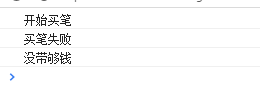

<!DOCTYPE html>
<html>
<head><meta name="generator" content="Hexo 3.8.0">
  <meta charset="utf-8">
  

  
  <title>Gzqqqqq</title>
  <meta name="viewport" content="width=device-width, initial-scale=1, maximum-scale=1">
  
  
  
  <meta property="og:type" content="website">
<meta property="og:title" content="Gzqqqqq">
<meta property="og:url" content="http://yoursite.com/index.html">
<meta property="og:site_name" content="Gzqqqqq">
<meta property="og:locale" content="default">
<meta name="twitter:card" content="summary">
<meta name="twitter:title" content="Gzqqqqq">
  
    <link rel="alternate" href="/atom.xml" title="Gzqqqqq" type="application/atom+xml">
  
  
    <link rel="icon" href="/images/default-avatar.jpeg">
  
  
    <link href="//fonts.googleapis.com/css?family=Source+Code+Pro" rel="stylesheet" type="text/css">
  
  <link rel="stylesheet" href="/css/style.css">
  <link rel="stylesheet" href="/css/highlight.css">
</head>
</html>
<body>
  <div id="fullpage" class="mobile-nav-right">
    
      <div id="wrapper" title="图片来自网络">
    
    
      <header id="header">
  <div id="nav-toggle" class="nav-toggle"></div>
  <div class="head-box global-width">
    <nav class="nav-box nav-right">
      
        <a class="nav-item" href="/" title>首页</a>
      
        <a class="nav-item" href="/archives" title>归档</a>
      
    </nav>
  </div>
</header>
      <div id="middlecontent" title class="global-width sidebar-right">
        <section id="main">
  
    <article id="post-ES6中的promise的实现原理" class="article global-container article-type-post" itemscope itemprop="blogPost">
  
    <header class="article-header">
      
  
    <h1 itemprop="name">
      <a class="article-title" href="/2019/03/28/ES6中的promise的实现原理/">ES6中的promise的实现原理</a>
    </h1>
  

    </header>
  
  <div class="article-meta">
    <a href="/2019/03/28/ES6中的promise的实现原理/" class="article-date">
  <time datetime="2019-03-28T08:25:42.000Z" itemprop="datePublished">2019-03-28</time>
</a>
    
    
  <ul class="article-tag-list"><li class="article-tag-list-item"><a class="article-tag-list-link" href="/tags/javascript/">javascript</a></li></ul>

  </div>
  

  <div class="article-inner">
    
    <div class="article-content article-content-doorframe" itemprop="articleBody">
      
        <h3 id="实现一个简单的Promise"><a href="#实现一个简单的Promise" class="headerlink" title="实现一个简单的Promise"></a>实现一个简单的Promise</h3><h3 id="1-promise的构造方法："><a href="#1-promise的构造方法：" class="headerlink" title="1. promise的构造方法："></a>1. promise的构造方法：</h3><p>参数是function，可以是一个参数，也可以是两个参数。</p>
<div class="highlight-box" autocomplete="off" autocorrect="off" autocapitalize="off" spellcheck="false" contenteditable="true" data-rel="BASH"><figure class="iseeu highlight /bash"><table><tr><td class="gutter"><pre><span class="line">1</span><br><span class="line">2</span><br><span class="line">3</span><br><span class="line">4</span><br><span class="line">5</span><br><span class="line">6</span><br><span class="line">7</span><br><span class="line">8</span><br><span class="line">9</span><br><span class="line">10</span><br><span class="line">11</span><br></pre></td><td class="code"><pre><span class="line"><span class="keyword">function</span>  Promise(fn) &#123;</span><br><span class="line"></span><br><span class="line">    <span class="keyword">function</span> resolve(value) &#123;</span><br><span class="line">    </span><br><span class="line">    &#125;</span><br><span class="line">    <span class="keyword">function</span> reject(value) &#123;</span><br><span class="line">    </span><br><span class="line">    &#125;</span><br><span class="line">    </span><br><span class="line">    fn (resolve,reject);</span><br><span class="line">&#125;</span><br></pre></td></tr></table></figure></div>
<h3 id="2-promise中的then方法："><a href="#2-promise中的then方法：" class="headerlink" title="2. promise中的then方法："></a>2. promise中的then方法：</h3><p>promise最重要的一个方法是then，我们需要实现then方法，then方法接受的也是2个function，一个是成功的回调，一个是失败的回调</p>
<div class="highlight-box" autocomplete="off" autocorrect="off" autocapitalize="off" spellcheck="false" contenteditable="true" data-rel="BASH"><figure class="iseeu highlight /bash"><table><tr><td class="gutter"><pre><span class="line">1</span><br><span class="line">2</span><br><span class="line">3</span><br><span class="line">4</span><br><span class="line">5</span><br><span class="line">6</span><br><span class="line">7</span><br><span class="line">8</span><br><span class="line">9</span><br><span class="line">10</span><br><span class="line">11</span><br><span class="line">12</span><br><span class="line">13</span><br><span class="line">14</span><br><span class="line">15</span><br><span class="line">16</span><br><span class="line">17</span><br><span class="line">18</span><br><span class="line">19</span><br><span class="line">20</span><br><span class="line">21</span><br></pre></td><td class="code"><pre><span class="line"><span class="keyword">function</span> Promise(fn) &#123;</span><br><span class="line">    var value = null, succallbacks = [], failcallbacks = [];</span><br><span class="line">    this.then = <span class="keyword">function</span> (fulfilled, rejected) &#123;</span><br><span class="line">        succallbacks.push(fulfilled);</span><br><span class="line">        failcallbacks.push(rejected);</span><br><span class="line">    &#125;</span><br><span class="line"></span><br><span class="line">    <span class="keyword">function</span> resolve(value) &#123;</span><br><span class="line">         succallbacks.forEach((callback) =&gt; &#123;</span><br><span class="line">             callback(value);</span><br><span class="line">         &#125;)</span><br><span class="line">    &#125;</span><br><span class="line"></span><br><span class="line">    <span class="keyword">function</span> reject(value) &#123;</span><br><span class="line">        failcallbacks.forEach((callback) =&gt; &#123;</span><br><span class="line">            callback(value);</span><br><span class="line">        &#125;)</span><br><span class="line">    &#125;</span><br><span class="line"></span><br><span class="line">    fn(resolve, reject);</span><br><span class="line">&#125;</span><br></pre></td></tr></table></figure></div>
<h3 id="3-加入链式调用，以及延时"><a href="#3-加入链式调用，以及延时" class="headerlink" title="3. 加入链式调用，以及延时"></a>3. 加入链式调用，以及延时</h3><div class="highlight-box" autocomplete="off" autocorrect="off" autocapitalize="off" spellcheck="false" contenteditable="true" data-rel="BASH"><figure class="iseeu highlight /bash"><table><tr><td class="gutter"><pre><span class="line">1</span><br><span class="line">2</span><br><span class="line">3</span><br><span class="line">4</span><br><span class="line">5</span><br><span class="line">6</span><br><span class="line">7</span><br><span class="line">8</span><br><span class="line">9</span><br><span class="line">10</span><br><span class="line">11</span><br><span class="line">12</span><br><span class="line">13</span><br><span class="line">14</span><br><span class="line">15</span><br><span class="line">16</span><br><span class="line">17</span><br><span class="line">18</span><br><span class="line">19</span><br><span class="line">20</span><br><span class="line">21</span><br><span class="line">22</span><br><span class="line">23</span><br><span class="line">24</span><br><span class="line">25</span><br><span class="line">26</span><br><span class="line">27</span><br><span class="line">28</span><br></pre></td><td class="code"><pre><span class="line"><span class="keyword">function</span> Promise(fn) &#123;</span><br><span class="line">    var  succallbacks = [], failcallbacks = [];</span><br><span class="line">    this.then = <span class="keyword">function</span> (fulfilled, rejected) &#123;</span><br><span class="line">        succallbacks.push(fulfilled);</span><br><span class="line">        failcallbacks.push(rejected);</span><br><span class="line">        <span class="built_in">return</span> this;   //加入链式调用，注意bluebird 或者原生promise中是返回一个新的promise，这样只是为了方便，</span><br><span class="line">    &#125;</span><br><span class="line"></span><br><span class="line">    <span class="keyword">function</span> resolve(value) &#123;</span><br><span class="line">        setTimeout(<span class="function"><span class="title">function</span></span>() &#123;   //加入延时</span><br><span class="line">            succallbacks.forEach((callback) =&gt; &#123;</span><br><span class="line">                callback(value);</span><br><span class="line">            &#125;)</span><br><span class="line"></span><br><span class="line">        &#125;, 0)</span><br><span class="line">    &#125;</span><br><span class="line"></span><br><span class="line">    <span class="keyword">function</span> reject(value) &#123;</span><br><span class="line">        setTimeout(<span class="function"><span class="title">function</span></span>() &#123;</span><br><span class="line">            failcallbacks.forEach((callback) =&gt; &#123;</span><br><span class="line">                callback(value);</span><br><span class="line">            &#125;)</span><br><span class="line"></span><br><span class="line">        &#125;, 0)</span><br><span class="line">    &#125;</span><br><span class="line"></span><br><span class="line">    fn(resolve, reject);</span><br><span class="line">&#125;</span><br></pre></td></tr></table></figure></div>
<h3 id="4-加入状态"><a href="#4-加入状态" class="headerlink" title="4. 加入状态"></a>4. 加入状态</h3><p>当调用成功或者失败事件时，改变当前的状态，，then方法根据状态将函数放入成功或失败数组中。</p>
<div class="highlight-box" autocomplete="off" autocorrect="off" autocapitalize="off" spellcheck="false" contenteditable="true" data-rel="BASH"><figure class="iseeu highlight /bash"><table><tr><td class="gutter"><pre><span class="line">1</span><br><span class="line">2</span><br><span class="line">3</span><br><span class="line">4</span><br><span class="line">5</span><br><span class="line">6</span><br><span class="line">7</span><br><span class="line">8</span><br><span class="line">9</span><br><span class="line">10</span><br><span class="line">11</span><br><span class="line">12</span><br><span class="line">13</span><br><span class="line">14</span><br><span class="line">15</span><br><span class="line">16</span><br><span class="line">17</span><br><span class="line">18</span><br><span class="line">19</span><br><span class="line">20</span><br><span class="line">21</span><br><span class="line">22</span><br><span class="line">23</span><br><span class="line">24</span><br><span class="line">25</span><br><span class="line">26</span><br><span class="line">27</span><br><span class="line">28</span><br><span class="line">29</span><br><span class="line">30</span><br><span class="line">31</span><br><span class="line">32</span><br><span class="line">33</span><br><span class="line">34</span><br><span class="line">35</span><br><span class="line">36</span><br><span class="line">37</span><br><span class="line">38</span><br><span class="line">39</span><br><span class="line">40</span><br></pre></td><td class="code"><pre><span class="line"><span class="keyword">function</span> Promise(fn) &#123;</span><br><span class="line">    var data = undefined, reason = undefined;</span><br><span class="line">    var succallbacks = [];</span><br><span class="line">    var failcallbacks = [];</span><br><span class="line">    var status = <span class="string">"pending"</span>; // 加入promise  3种状态</span><br><span class="line">    this.then = <span class="keyword">function</span> (fulfilled, rejected) &#123;</span><br><span class="line">        <span class="keyword">if</span> (status === <span class="string">"pending"</span>) &#123;</span><br><span class="line">            succallbacks.push(fulfilled);</span><br><span class="line">            failcallbacks.push(rejected);</span><br><span class="line">            <span class="built_in">return</span> this;   //加入链式调用，注意bluebird 或者原生promise中是返回一个新的promise，这样只是为了方便，</span><br><span class="line">        &#125; <span class="keyword">else</span> <span class="keyword">if</span> (status == <span class="string">"fulfilled"</span>) &#123;</span><br><span class="line">            fulfilled(data);</span><br><span class="line">        &#125; <span class="keyword">else</span> &#123;</span><br><span class="line">            rejected(reason);</span><br><span class="line">        &#125;</span><br><span class="line">    &#125;</span><br><span class="line"></span><br><span class="line">    <span class="keyword">function</span> resolve(value) &#123;</span><br><span class="line">        setTimeout(<span class="function"><span class="title">function</span></span> () &#123;   //加入延时</span><br><span class="line">            status = <span class="string">"fulfilled"</span>;</span><br><span class="line">            data = value;</span><br><span class="line">            succallbacks.forEach((callback) =&gt; &#123;</span><br><span class="line">                callback(value);</span><br><span class="line">            &#125;)</span><br><span class="line">        &#125;, 0)</span><br><span class="line">    &#125;</span><br><span class="line"></span><br><span class="line">    <span class="keyword">function</span> reject(value) &#123;</span><br><span class="line">        setTimeout(<span class="function"><span class="title">function</span></span> () &#123;</span><br><span class="line">            status = <span class="string">"rejected"</span>;</span><br><span class="line">            reason = value;</span><br><span class="line">            failcallbacks.forEach((callback) =&gt; &#123;</span><br><span class="line">                callback(value);</span><br><span class="line">            &#125;)</span><br><span class="line"></span><br><span class="line">        &#125;, 0)</span><br><span class="line">    &#125;</span><br><span class="line"></span><br><span class="line">    fn(resolve, reject);</span><br><span class="line">&#125;</span><br></pre></td></tr></table></figure></div>
<h3 id="5-完整版"><a href="#5-完整版" class="headerlink" title="5. 完整版"></a>5. 完整版</h3><p>修改then方法返回一个新的Promise，能保证 then(f1).then(f2)</p>
<div class="highlight-box" autocomplete="off" autocorrect="off" autocapitalize="off" spellcheck="false" contenteditable="true" data-rel="BASH"><figure class="iseeu highlight /bash"><table><tr><td class="gutter"><pre><span class="line">1</span><br><span class="line">2</span><br><span class="line">3</span><br><span class="line">4</span><br><span class="line">5</span><br><span class="line">6</span><br><span class="line">7</span><br><span class="line">8</span><br><span class="line">9</span><br><span class="line">10</span><br><span class="line">11</span><br><span class="line">12</span><br><span class="line">13</span><br><span class="line">14</span><br><span class="line">15</span><br><span class="line">16</span><br><span class="line">17</span><br><span class="line">18</span><br><span class="line">19</span><br><span class="line">20</span><br><span class="line">21</span><br><span class="line">22</span><br><span class="line">23</span><br><span class="line">24</span><br><span class="line">25</span><br><span class="line">26</span><br><span class="line">27</span><br><span class="line">28</span><br><span class="line">29</span><br><span class="line">30</span><br><span class="line">31</span><br><span class="line">32</span><br><span class="line">33</span><br><span class="line">34</span><br><span class="line">35</span><br><span class="line">36</span><br><span class="line">37</span><br><span class="line">38</span><br><span class="line">39</span><br><span class="line">40</span><br><span class="line">41</span><br><span class="line">42</span><br><span class="line">43</span><br><span class="line">44</span><br><span class="line">45</span><br><span class="line">46</span><br><span class="line">47</span><br><span class="line">48</span><br><span class="line">49</span><br><span class="line">50</span><br><span class="line">51</span><br><span class="line">52</span><br><span class="line">53</span><br><span class="line">54</span><br><span class="line">55</span><br><span class="line">56</span><br><span class="line">57</span><br><span class="line">58</span><br></pre></td><td class="code"><pre><span class="line"><span class="keyword">function</span> Promise(fn) &#123;</span><br><span class="line">    var data = undefined, reason = undefined;</span><br><span class="line">    var succallbacks = [];</span><br><span class="line">    var failcallbacks = [];</span><br><span class="line">    var status = <span class="string">"pending"</span>;</span><br><span class="line">    this.then = <span class="keyword">function</span> (fulfilled, rejected) &#123;</span><br><span class="line">        <span class="built_in">return</span> new Promise(<span class="keyword">function</span>(resolve,reject) &#123;    //返回一个新的promise</span><br><span class="line">            <span class="keyword">function</span> suc(value) &#123;   //成功</span><br><span class="line">                var ret = typeof fulfilled === <span class="string">'function'</span> &amp;&amp; fulfilled(value) || value;</span><br><span class="line">                <span class="keyword">if</span>( ret &amp;&amp; typeof ret [<span class="string">'then'</span>] == <span class="string">'function'</span>)&#123;    //判断 <span class="keyword">then</span>中的 返回的是否是promise对象，如果是注册<span class="keyword">then</span>方法</span><br><span class="line">                    ret.then(<span class="keyword">function</span>(value)&#123;</span><br><span class="line">                        resolve(value);</span><br><span class="line">                    &#125;);</span><br><span class="line">                &#125; <span class="keyword">else</span> &#123;</span><br><span class="line">                    resolve(ret);</span><br><span class="line">                &#125;</span><br><span class="line">            &#125;</span><br><span class="line">            <span class="keyword">function</span> errback(reason) &#123;  //失败</span><br><span class="line">                reason = typeof rejected === <span class="string">'function'</span>  &amp;&amp; rejected(reason) || reason;</span><br><span class="line">                reject(reason);</span><br><span class="line">            &#125;</span><br><span class="line"></span><br><span class="line">            <span class="keyword">if</span> (status === <span class="string">'pending'</span>) &#123;</span><br><span class="line">                succallbacks.push(suc);</span><br><span class="line">                failcallbacks.push(errback);</span><br><span class="line">            &#125; <span class="keyword">else</span> <span class="keyword">if</span>(status === <span class="string">'fulfilled'</span>)&#123;</span><br><span class="line">                suc(data);</span><br><span class="line">            &#125; <span class="keyword">else</span> &#123;</span><br><span class="line">                errback(reason);</span><br><span class="line">            &#125;</span><br><span class="line">        &#125;)</span><br><span class="line"></span><br><span class="line">    &#125;</span><br><span class="line"></span><br><span class="line">    <span class="keyword">function</span> resolve(value) &#123;</span><br><span class="line">        setTimeout(<span class="function"><span class="title">function</span></span> () &#123;   //加入延时</span><br><span class="line">            status = <span class="string">"fulfilled"</span>;</span><br><span class="line">            data = value;</span><br><span class="line">            succallbacks.forEach((callback) =&gt; &#123;</span><br><span class="line">                callback(value);</span><br><span class="line">            &#125;)</span><br><span class="line">        &#125;, 0)</span><br><span class="line"></span><br><span class="line">    &#125;</span><br><span class="line"></span><br><span class="line">    <span class="keyword">function</span> reject(value) &#123;</span><br><span class="line">        setTimeout(<span class="function"><span class="title">function</span></span> () &#123;</span><br><span class="line">            status = <span class="string">"rejected"</span>;</span><br><span class="line">            reason = value;</span><br><span class="line">            failcallbacks.forEach((callback) =&gt; &#123;</span><br><span class="line">                callback(value);</span><br><span class="line">            &#125;)</span><br><span class="line"></span><br><span class="line">        &#125;, 0)</span><br><span class="line">    &#125;</span><br><span class="line"></span><br><span class="line">    fn(resolve, reject);</span><br><span class="line">&#125;</span><br></pre></td></tr></table></figure></div>

      
    </div>
    
  </div>
  
  
</article>

  
    <article id="post-ES6中的promise用法" class="article global-container article-type-post" itemscope itemprop="blogPost">
  
    <header class="article-header">
      
  
    <h1 itemprop="name">
      <a class="article-title" href="/2019/03/28/ES6中的promise用法/">ES6中的promise用法</a>
    </h1>
  

    </header>
  
  <div class="article-meta">
    <a href="/2019/03/28/ES6中的promise用法/" class="article-date">
  <time datetime="2019-03-28T07:42:49.000Z" itemprop="datePublished">2019-03-28</time>
</a>
    
    
  <ul class="article-tag-list"><li class="article-tag-list-item"><a class="article-tag-list-link" href="/tags/javascript/">javascript</a></li></ul>

  </div>
  

  <div class="article-inner">
    
    <div class="article-content article-content-doorframe" itemprop="articleBody">
      
        <p>Promise，简单说就是一个容器，里面保存着某个未来才会结束的事件（通常是一个异步操作）的结果。从语法上说，Promise 是一个对象，从它可以获取异步操作的消息。</p>
<hr>
<h3 id="Promise对象有以下两个特点："><a href="#Promise对象有以下两个特点：" class="headerlink" title="Promise对象有以下两个特点："></a>Promise对象有以下两个特点：</h3><p>（1）对象的状态不受外界影响。Promise对象代表一个异步操作，有三种状态：Pending（进行中）、Resolved（已完成，又称 Fulfilled）和Rejected（已失败）。只有异步操作的结果，可以决定当前是哪一种状态，任何其他操作都无法改变这个状态。这也是Promise这个名字的由来，它的英语意思就是“承诺”，表示其他手段无法改变。</p>
<p>（2）一旦状态改变，就不会再变，任何时候都可以得到这个结果。Promise对象的状态改变，只有两种可能：从Pending变为Resolved和从Pending变为Rejected。只要这两种情况发生，状态就凝固了，不会再变了，会一直保持这个结果。就算改变已经发生了，你再对Promise对象添加回调函数，也会立即得到这个结果。这与事件（Event）完全不同，事件的特点是，如果你错过了它，再去监听，是得不到结果的。</p>
<p>有了Promise对象，就可以将异步操作以同步操作的流程表达出来，避免了层层嵌套的回调函数。此外，Promise对象提供统一的接口，使得控制异步操作更加容易。</p>
<h4 id="简单来说，Promise-就是用同步的方式写异步的代码，用来解决回调问题"><a href="#简单来说，Promise-就是用同步的方式写异步的代码，用来解决回调问题" class="headerlink" title="简单来说，Promise 就是用同步的方式写异步的代码，用来解决回调问题"></a>简单来说，Promise 就是用同步的方式写异步的代码，用来解决回调问题</h4><h3 id="then-方法"><a href="#then-方法" class="headerlink" title="then()方法"></a>then()方法</h3><p>then 方法就是把原来的回调写法分离出来，在异步操作执行完后，用链式调用的方式执行回调函数。<br>而 Promise 的优势就在于这个链式调用。我们可以在 then 方法中继续写 Promise 对象并返回，然后继续调用 then 来进行回调操作。<br>可有两个参数，第一个是成功 resolve 调用的方法，第二个是失败 reject 调用的方法</p>
<hr>
<h3 id="resolve-方法"><a href="#resolve-方法" class="headerlink" title="resolve()方法"></a>resolve()方法</h3><h3 id="把-Promise-的状态置为完成态（Resolved），这时-then-方法就能捕捉到变化，并执行“成功”情况的回调。"><a href="#把-Promise-的状态置为完成态（Resolved），这时-then-方法就能捕捉到变化，并执行“成功”情况的回调。" class="headerlink" title="把 Promise 的状态置为完成态（Resolved），这时 then 方法就能捕捉到变化，并执行“成功”情况的回调。"></a>把 Promise 的状态置为完成态（Resolved），这时 then 方法就能捕捉到变化，并执行“成功”情况的回调。</h3><p>下面做一个买笔写作业上交的演示，它们是层层依赖的关系，下一步的的操作需要使用上一部操作的结果。（这里使用 setTimeout 模拟异步操作），正式开发可以用 ajax 异步</p>
<div class="highlight-box" autocomplete="off" autocorrect="off" autocapitalize="off" spellcheck="false" contenteditable="true" data-rel="BASH"><figure class="iseeu highlight /bash"><table><tr><td class="gutter"><pre><span class="line">1</span><br><span class="line">2</span><br><span class="line">3</span><br><span class="line">4</span><br><span class="line">5</span><br><span class="line">6</span><br><span class="line">7</span><br><span class="line">8</span><br><span class="line">9</span><br><span class="line">10</span><br><span class="line">11</span><br><span class="line">12</span><br><span class="line">13</span><br><span class="line">14</span><br><span class="line">15</span><br><span class="line">16</span><br><span class="line">17</span><br><span class="line">18</span><br><span class="line">19</span><br><span class="line">20</span><br><span class="line">21</span><br><span class="line">22</span><br><span class="line">23</span><br><span class="line">24</span><br><span class="line">25</span><br><span class="line">26</span><br><span class="line">27</span><br><span class="line">28</span><br><span class="line">29</span><br><span class="line">30</span><br><span class="line">31</span><br><span class="line">32</span><br><span class="line">33</span><br><span class="line">34</span><br><span class="line">35</span><br><span class="line">36</span><br><span class="line">37</span><br><span class="line">38</span><br><span class="line">39</span><br><span class="line">40</span><br><span class="line">41</span><br><span class="line">42</span><br><span class="line">43</span><br><span class="line">44</span><br><span class="line">45</span><br><span class="line">46</span><br></pre></td><td class="code"><pre><span class="line">//买笔</span><br><span class="line"><span class="keyword">function</span> <span class="function"><span class="title">buy</span></span>()&#123;</span><br><span class="line">    console.log(<span class="string">"开始买笔"</span>);</span><br><span class="line">    var p = new Promise(<span class="keyword">function</span>(resolve,reject)&#123;</span><br><span class="line">        setTimeout(<span class="function"><span class="title">function</span></span>()&#123;</span><br><span class="line">            console.log(<span class="string">"买了笔芯"</span>);</span><br><span class="line">            resolve(<span class="string">"数学作业"</span>);</span><br><span class="line">        &#125;,1000);</span><br><span class="line">    &#125;);</span><br><span class="line">    <span class="built_in">return</span> p;</span><br><span class="line">&#125;</span><br><span class="line">//写作业</span><br><span class="line"><span class="keyword">function</span> work(data)&#123;</span><br><span class="line">    console.log(<span class="string">"开始写作业："</span>+data);</span><br><span class="line">    var p = new Promise(<span class="keyword">function</span>(resolve,reject)&#123;</span><br><span class="line">        setTimeout(<span class="function"><span class="title">function</span></span>()&#123;</span><br><span class="line">            console.log(<span class="string">"写完作业"</span>);</span><br><span class="line">            resolve(<span class="string">"作业本"</span>);</span><br><span class="line">        &#125;,1000);</span><br><span class="line">    &#125;);</span><br><span class="line">    <span class="built_in">return</span> p;</span><br><span class="line">&#125;</span><br><span class="line"></span><br><span class="line"><span class="keyword">function</span> out(data)&#123;</span><br><span class="line">    console.log(<span class="string">"开始上交："</span>+data);</span><br><span class="line">    var p = new Promise(<span class="keyword">function</span>(resolve,reject)&#123;</span><br><span class="line">        setTimeout(<span class="function"><span class="title">function</span></span>()&#123;</span><br><span class="line">            console.log(<span class="string">"上交完毕"</span>);</span><br><span class="line">            resolve(<span class="string">"得分：A"</span>);</span><br><span class="line">        &#125;,1000);</span><br><span class="line">    &#125;);</span><br><span class="line">    <span class="built_in">return</span> p;</span><br><span class="line">&#125;</span><br><span class="line">/* 不建议使用这种方式</span><br><span class="line">buy().<span class="keyword">then</span>(<span class="keyword">function</span>(data)&#123;</span><br><span class="line">    <span class="built_in">return</span> work(data);</span><br><span class="line">&#125;).<span class="keyword">then</span>(<span class="keyword">function</span>(data)&#123;</span><br><span class="line">    <span class="built_in">return</span> out(data);</span><br><span class="line">&#125;).<span class="keyword">then</span>(<span class="keyword">function</span>(data)&#123;</span><br><span class="line">    console.log(data);</span><br><span class="line">&#125;);*/</span><br><span class="line"></span><br><span class="line">//推荐这种简化的写法</span><br><span class="line">buy().<span class="keyword">then</span>(work).<span class="keyword">then</span>(out).<span class="keyword">then</span>(<span class="keyword">function</span>(data)&#123;</span><br><span class="line">    console.log(data);</span><br><span class="line">&#125;);</span><br></pre></td></tr></table></figure></div>
<p>结果：<br></p>
<p>正式开发用ajax异步：</p>
<div class="highlight-box" autocomplete="off" autocorrect="off" autocapitalize="off" spellcheck="false" contenteditable="true" data-rel="BASH"><figure class="iseeu highlight /bash"><table><tr><td class="gutter"><pre><span class="line">1</span><br><span class="line">2</span><br><span class="line">3</span><br><span class="line">4</span><br><span class="line">5</span><br><span class="line">6</span><br><span class="line">7</span><br><span class="line">8</span><br><span class="line">9</span><br><span class="line">10</span><br><span class="line">11</span><br><span class="line">12</span><br><span class="line">13</span><br><span class="line">14</span><br><span class="line">15</span><br><span class="line">16</span><br><span class="line">17</span><br><span class="line">18</span><br><span class="line">19</span><br><span class="line">20</span><br><span class="line">21</span><br><span class="line">22</span><br><span class="line">23</span><br><span class="line">24</span><br></pre></td><td class="code"><pre><span class="line">var promise = new Promise(<span class="keyword">function</span>(resolve,reject)&#123;</span><br><span class="line">    $.ajax(&#123;</span><br><span class="line">        url:<span class="string">'/api/poisearch.json'</span>,</span><br><span class="line">        method:<span class="string">'get'</span>,</span><br><span class="line">        datatype:<span class="string">'json'</span>,</span><br><span class="line">        success:(res) =&gt;&#123;</span><br><span class="line">            resolve(res)</span><br><span class="line">        &#125;,</span><br><span class="line">        error:(err)=&gt;&#123;</span><br><span class="line">            reject(err)</span><br><span class="line">        &#125;</span><br><span class="line">    &#125;);</span><br><span class="line">&#125;);</span><br><span class="line"></span><br><span class="line">promise.then(<span class="keyword">function</span>(res)&#123;</span><br><span class="line">    <span class="built_in">return</span> res.data</span><br><span class="line">&#125;).<span class="keyword">then</span>(<span class="keyword">function</span>(data)&#123;</span><br><span class="line">    <span class="built_in">return</span> data.result;</span><br><span class="line">&#125;).<span class="keyword">then</span>(<span class="keyword">function</span>(result)&#123;</span><br><span class="line">    console.log(result)</span><br><span class="line">&#125;);</span><br><span class="line"></span><br><span class="line">//推荐使用箭头函数简写成,极大提升了代码的简洁性和可读性</span><br><span class="line">promise.then(res =&gt; res.data).<span class="keyword">then</span>(data =&gt; data.result).<span class="keyword">then</span>(result =&gt; console.log(result));</span><br></pre></td></tr></table></figure></div>
<hr>
<h3 id="reject-方法"><a href="#reject-方法" class="headerlink" title="reject()方法"></a>reject()方法</h3><h3 id="就是把-Promise-的状态置为已失败（Rejected），这时-then-方法就能捕捉到变化，并执行“失败”情况的回调。"><a href="#就是把-Promise-的状态置为已失败（Rejected），这时-then-方法就能捕捉到变化，并执行“失败”情况的回调。" class="headerlink" title="就是把 Promise 的状态置为已失败（Rejected），这时 then 方法就能捕捉到变化，并执行“失败”情况的回调。"></a>就是把 Promise 的状态置为已失败（Rejected），这时 then 方法就能捕捉到变化，并执行“失败”情况的回调。</h3><div class="highlight-box" autocomplete="off" autocorrect="off" autocapitalize="off" spellcheck="false" contenteditable="true" data-rel="BASH"><figure class="iseeu highlight /bash"><table><tr><td class="gutter"><pre><span class="line">1</span><br><span class="line">2</span><br><span class="line">3</span><br><span class="line">4</span><br><span class="line">5</span><br><span class="line">6</span><br><span class="line">7</span><br><span class="line">8</span><br><span class="line">9</span><br><span class="line">10</span><br><span class="line">11</span><br><span class="line">12</span><br><span class="line">13</span><br><span class="line">14</span><br><span class="line">15</span><br><span class="line">16</span><br><span class="line">17</span><br><span class="line">18</span><br><span class="line">19</span><br><span class="line">20</span><br><span class="line">21</span><br><span class="line">22</span><br><span class="line">23</span><br><span class="line">24</span><br><span class="line">25</span><br></pre></td><td class="code"><pre><span class="line"><span class="keyword">function</span> <span class="function"><span class="title">rebuy</span></span>()&#123;</span><br><span class="line">    console.log(<span class="string">"开始买笔"</span>);</span><br><span class="line">    var p = new Promise(<span class="keyword">function</span>(resolve,reject)&#123;</span><br><span class="line">        setTimeout(<span class="function"><span class="title">function</span></span>()&#123;</span><br><span class="line">            console.log(<span class="string">"买笔失败"</span>);</span><br><span class="line">            reject(<span class="string">"没带够钱"</span>);</span><br><span class="line">        &#125;,1000);</span><br><span class="line">    &#125;);</span><br><span class="line">    <span class="built_in">return</span> p;</span><br><span class="line">&#125;</span><br><span class="line"></span><br><span class="line"><span class="keyword">function</span> rework(data)&#123;</span><br><span class="line">    console.log(<span class="string">"开始写作业："</span>+data);</span><br><span class="line">    var p = new Promise(<span class="keyword">function</span>(resolve,reject)&#123;</span><br><span class="line">        setTimeout(<span class="function"><span class="title">function</span></span>()&#123;</span><br><span class="line">            console.log(<span class="string">"写完作业"</span>);</span><br><span class="line">            resolve(<span class="string">"作业本"</span>);</span><br><span class="line">        &#125;,1000);</span><br><span class="line">    &#125;);</span><br><span class="line">    <span class="built_in">return</span> p;</span><br><span class="line">&#125;</span><br><span class="line"></span><br><span class="line">rebuy().<span class="keyword">then</span>(rework,<span class="keyword">function</span>(data)&#123;</span><br><span class="line">    console.log(data);</span><br><span class="line">&#125;);</span><br></pre></td></tr></table></figure></div>
<p>结果：<br></p>
<hr>
<h3 id="catch-方法"><a href="#catch-方法" class="headerlink" title="catch()方法"></a>catch()方法</h3><h3 id="作用一：它可以和-then-的第二个参数一样，用来指定-reject-的回调"><a href="#作用一：它可以和-then-的第二个参数一样，用来指定-reject-的回调" class="headerlink" title="作用一：它可以和 then 的第二个参数一样，用来指定 reject 的回调"></a>作用一：它可以和 then 的第二个参数一样，用来指定 reject 的回调</h3><div class="highlight-box" autocomplete="off" autocorrect="off" autocapitalize="off" spellcheck="false" contenteditable="true" data-rel="BASH"><figure class="iseeu highlight /bash"><table><tr><td class="gutter"><pre><span class="line">1</span><br><span class="line">2</span><br><span class="line">3</span><br><span class="line">4</span><br><span class="line">5</span><br><span class="line">6</span><br><span class="line">7</span><br><span class="line">8</span><br><span class="line">9</span><br><span class="line">10</span><br><span class="line">11</span><br><span class="line">12</span><br><span class="line">13</span><br><span class="line">14</span><br><span class="line">15</span><br><span class="line">16</span><br><span class="line">17</span><br><span class="line">18</span><br><span class="line">19</span><br><span class="line">20</span><br><span class="line">21</span><br><span class="line">22</span><br><span class="line">23</span><br><span class="line">24</span><br><span class="line">25</span><br></pre></td><td class="code"><pre><span class="line"><span class="keyword">function</span> <span class="function"><span class="title">rebuy</span></span>()&#123;</span><br><span class="line">    console.log(<span class="string">"开始买笔"</span>);</span><br><span class="line">    var p = new Promise(<span class="keyword">function</span>(resolve,reject)&#123;</span><br><span class="line">        setTimeout(<span class="function"><span class="title">function</span></span>()&#123;</span><br><span class="line">            console.log(<span class="string">"买笔失败"</span>);</span><br><span class="line">            reject(<span class="string">"没带够钱"</span>);</span><br><span class="line">        &#125;,1000);</span><br><span class="line">    &#125;);</span><br><span class="line">    <span class="built_in">return</span> p;</span><br><span class="line">&#125;</span><br><span class="line"></span><br><span class="line"><span class="keyword">function</span> rework(data)&#123;</span><br><span class="line">    console.log(<span class="string">"开始写作业："</span>+data);</span><br><span class="line">    var p = new Promise(<span class="keyword">function</span>(resolve,reject)&#123;</span><br><span class="line">        setTimeout(<span class="function"><span class="title">function</span></span>()&#123;</span><br><span class="line">            console.log(<span class="string">"写完作业"</span>);</span><br><span class="line">            resolve(<span class="string">"作业本"</span>);</span><br><span class="line">        &#125;,1000);</span><br><span class="line">    &#125;);</span><br><span class="line">    <span class="built_in">return</span> p;</span><br><span class="line">&#125;</span><br><span class="line"></span><br><span class="line">rebuy().<span class="keyword">then</span>(rework).catch(<span class="keyword">function</span>(data)&#123;</span><br><span class="line">    console.log(data);</span><br><span class="line">&#125;);</span><br></pre></td></tr></table></figure></div>
<p>结果：<br></p>
<h3 id="作用二，当执行resolve的回调时，如果抛出异常（代码出错），也不会报错卡死-js，而是会进到这个-catch方法中。"><a href="#作用二，当执行resolve的回调时，如果抛出异常（代码出错），也不会报错卡死-js，而是会进到这个-catch方法中。" class="headerlink" title="作用二，当执行resolve的回调时，如果抛出异常（代码出错），也不会报错卡死 js，而是会进到这个 catch方法中。"></a>作用二，当执行resolve的回调时，如果抛出异常（代码出错），也不会报错卡死 js，而是会进到这个 catch方法中。</h3><div class="highlight-box" autocomplete="off" autocorrect="off" autocapitalize="off" spellcheck="false" contenteditable="true" data-rel="BASH"><figure class="iseeu highlight /bash"><table><tr><td class="gutter"><pre><span class="line">1</span><br><span class="line">2</span><br><span class="line">3</span><br><span class="line">4</span><br><span class="line">5</span><br><span class="line">6</span><br><span class="line">7</span><br><span class="line">8</span><br><span class="line">9</span><br><span class="line">10</span><br><span class="line">11</span><br><span class="line">12</span><br><span class="line">13</span><br><span class="line">14</span><br><span class="line">15</span><br><span class="line">16</span><br><span class="line">17</span><br><span class="line">18</span><br><span class="line">19</span><br><span class="line">20</span><br><span class="line">21</span><br><span class="line">22</span><br><span class="line">23</span><br><span class="line">24</span><br><span class="line">25</span><br><span class="line">26</span><br><span class="line">27</span><br><span class="line">28</span><br></pre></td><td class="code"><pre><span class="line"><span class="keyword">function</span> <span class="function"><span class="title">buy</span></span>()&#123;</span><br><span class="line">console.log(<span class="string">"开始买笔"</span>);</span><br><span class="line">    var p = new Promise(<span class="keyword">function</span>(resolve,reject)&#123;</span><br><span class="line">        setTimeout(<span class="function"><span class="title">function</span></span>()&#123;</span><br><span class="line">            console.log(<span class="string">"买了笔芯"</span>);</span><br><span class="line">            resolve(<span class="string">"数学作业"</span>);</span><br><span class="line">        &#125;,1000);</span><br><span class="line">    &#125;);</span><br><span class="line">    <span class="built_in">return</span> p;</span><br><span class="line">&#125;</span><br><span class="line"></span><br><span class="line"><span class="keyword">function</span> work(data)&#123;</span><br><span class="line">    console.log(<span class="string">"开始写作业："</span>+data);</span><br><span class="line">    var p = new Promise(<span class="keyword">function</span>(resolve,reject)&#123;</span><br><span class="line">        setTimeout(<span class="function"><span class="title">function</span></span>()&#123;</span><br><span class="line">            console.log(<span class="string">"写完作业"</span>);</span><br><span class="line">            resolve(<span class="string">"作业本"</span>);</span><br><span class="line">        &#125;,1000);</span><br><span class="line">    &#125;);</span><br><span class="line">    <span class="built_in">return</span> p;</span><br><span class="line">&#125;</span><br><span class="line"></span><br><span class="line">buy().<span class="keyword">then</span>(<span class="keyword">function</span>(data)&#123;</span><br><span class="line">    throw new Error(<span class="string">"买了坏的笔芯"</span>);</span><br><span class="line">    work(data);</span><br><span class="line">&#125;).catch(<span class="keyword">function</span>(data)&#123;</span><br><span class="line">    console.log(data);</span><br><span class="line">&#125;);</span><br></pre></td></tr></table></figure></div>
<p>结果：<br></p>
<hr>
<h3 id="all-方法"><a href="#all-方法" class="headerlink" title="all()方法"></a>all()方法</h3><h4 id="Promise-的-all-方法提供了并行执行异步操作的能力，并且在所有异步操作执行完后才执行回调。"><a href="#Promise-的-all-方法提供了并行执行异步操作的能力，并且在所有异步操作执行完后才执行回调。" class="headerlink" title="Promise 的 all 方法提供了并行执行异步操作的能力，并且在所有异步操作执行完后才执行回调。"></a>Promise 的 all 方法提供了并行执行异步操作的能力，并且在所有异步操作执行完后才执行回调。</h4><p>比如下面代码，两个个异步操作是并行执行的，等到它们都执行完后才会进到 then 里面。同时 all 会把所有异步操作的结果放进一个数组中传给 then。</p>
<div class="highlight-box" autocomplete="off" autocorrect="off" autocapitalize="off" spellcheck="false" contenteditable="true" data-rel="BASH"><figure class="iseeu highlight /bash"><table><tr><td class="gutter"><pre><span class="line">1</span><br><span class="line">2</span><br><span class="line">3</span><br><span class="line">4</span><br><span class="line">5</span><br><span class="line">6</span><br><span class="line">7</span><br><span class="line">8</span><br><span class="line">9</span><br><span class="line">10</span><br><span class="line">11</span><br><span class="line">12</span><br><span class="line">13</span><br><span class="line">14</span><br><span class="line">15</span><br><span class="line">16</span><br><span class="line">17</span><br><span class="line">18</span><br><span class="line">19</span><br><span class="line">20</span><br><span class="line">21</span><br><span class="line">22</span><br><span class="line">23</span><br><span class="line">24</span><br><span class="line">25</span><br><span class="line">26</span><br><span class="line">27</span><br><span class="line">28</span><br></pre></td><td class="code"><pre><span class="line">//买作业本</span><br><span class="line"><span class="keyword">function</span> <span class="function"><span class="title">cutUp</span></span>()&#123;</span><br><span class="line">    console.log(<span class="string">'挑作业本'</span>);</span><br><span class="line">    var p = new Promise(<span class="keyword">function</span>(resolve, reject)&#123; //做一些异步操作</span><br><span class="line">        setTimeout(<span class="function"><span class="title">function</span></span>()&#123;</span><br><span class="line">            console.log(<span class="string">'挑好购买作业本'</span>);</span><br><span class="line">            resolve(<span class="string">'新的作业本'</span>);</span><br><span class="line">        &#125;, 1000);</span><br><span class="line">    &#125;);</span><br><span class="line">    <span class="built_in">return</span> p;</span><br><span class="line">&#125;</span><br><span class="line"> </span><br><span class="line">//买笔</span><br><span class="line"><span class="keyword">function</span> <span class="function"><span class="title">boil</span></span>()&#123;</span><br><span class="line">    console.log(<span class="string">'挑笔芯'</span>);</span><br><span class="line">    var p = new Promise(<span class="keyword">function</span>(resolve, reject)&#123; //做一些异步操作</span><br><span class="line">        setTimeout(<span class="function"><span class="title">function</span></span>()&#123;</span><br><span class="line">            console.log(<span class="string">'挑好购买笔芯'</span>);</span><br><span class="line">            resolve(<span class="string">'新的笔芯'</span>);</span><br><span class="line">        &#125;, 1000);</span><br><span class="line">    &#125;);</span><br><span class="line">    <span class="built_in">return</span> p;</span><br><span class="line">&#125;</span><br><span class="line"></span><br><span class="line">Promise.all([cutUp(),boil()]).<span class="keyword">then</span>(<span class="keyword">function</span>(results)&#123;</span><br><span class="line">    console.log(<span class="string">"写作业的工具都买好了"</span>);</span><br><span class="line">    console.log(results);</span><br><span class="line">&#125;);</span><br></pre></td></tr></table></figure></div>
<p>结果：<br></p>
<hr>
<h3 id="race-方法"><a href="#race-方法" class="headerlink" title="race()方法"></a>race()方法</h3><h4 id="race-的用法与-all一样，只不过-all是等所有异步操作都执行完毕后才执行-then-回调。"><a href="#race-的用法与-all一样，只不过-all是等所有异步操作都执行完毕后才执行-then-回调。" class="headerlink" title="race 的用法与 all一样，只不过 all是等所有异步操作都执行完毕后才执行 then 回调。"></a>race 的用法与 all一样，只不过 all是等所有异步操作都执行完毕后才执行 then 回调。</h4><h4 id="而-race只要有一个异步操作执行完毕，就立刻执行-then-回调。"><a href="#而-race只要有一个异步操作执行完毕，就立刻执行-then-回调。" class="headerlink" title="而 race只要有一个异步操作执行完毕，就立刻执行 then 回调。"></a>而 race只要有一个异步操作执行完毕，就立刻执行 then 回调。</h4><p>注意：其它没有执行完毕的异步操作仍然会继续执行，而不是停止。</p>
<p>这里我们将上面样例的 all 改成 race<br><div class="highlight-box" autocomplete="off" autocorrect="off" autocapitalize="off" spellcheck="false" contenteditable="true" data-rel="BASH"><figure class="iseeu highlight /bash"><table><tr><td class="gutter"><pre><span class="line">1</span><br><span class="line">2</span><br><span class="line">3</span><br><span class="line">4</span><br></pre></td><td class="code"><pre><span class="line">Promise.race([cutUp(), boil()]).<span class="keyword">then</span>(<span class="keyword">function</span>(results)&#123;</span><br><span class="line">    console.log(<span class="string">"哈哈，我先买好啦"</span>);</span><br><span class="line">    console.log(results);</span><br><span class="line">&#125;);</span><br></pre></td></tr></table></figure></div></p>
<p>结果：<br></p>
<p>race 使用场景很多。比如我们可以用 race 给某个异步请求设置超时时间，并且在超时后执行相应的操作。</p>
<p>请求某个图片资源</p>
<div class="highlight-box" autocomplete="off" autocorrect="off" autocapitalize="off" spellcheck="false" contenteditable="true" data-rel="BASH"><figure class="iseeu highlight /bash"><table><tr><td class="gutter"><pre><span class="line">1</span><br><span class="line">2</span><br><span class="line">3</span><br><span class="line">4</span><br><span class="line">5</span><br><span class="line">6</span><br><span class="line">7</span><br><span class="line">8</span><br><span class="line">9</span><br><span class="line">10</span><br><span class="line">11</span><br><span class="line">12</span><br><span class="line">13</span><br><span class="line">14</span><br><span class="line">15</span><br><span class="line">16</span><br><span class="line">17</span><br><span class="line">18</span><br><span class="line">19</span><br><span class="line">20</span><br><span class="line">21</span><br><span class="line">22</span><br><span class="line">23</span><br><span class="line">24</span><br><span class="line">25</span><br><span class="line">26</span><br><span class="line">27</span><br><span class="line">28</span><br><span class="line">29</span><br></pre></td><td class="code"><pre><span class="line"><span class="keyword">function</span> <span class="function"><span class="title">requestImg</span></span>()&#123;</span><br><span class="line">    var p = new Promise(<span class="keyword">function</span>(resolve, reject)&#123;</span><br><span class="line">    var img = new Image();</span><br><span class="line">    img.onload = <span class="function"><span class="title">function</span></span>()&#123;</span><br><span class="line">       resolve(img);</span><br><span class="line">    &#125;</span><br><span class="line">    img.src = <span class="string">'xxxxxx'</span>;</span><br><span class="line">    &#125;);</span><br><span class="line">    <span class="built_in">return</span> p;</span><br><span class="line">&#125;</span><br><span class="line"> </span><br><span class="line">//延时函数，用于给请求计时</span><br><span class="line"><span class="keyword">function</span> <span class="function"><span class="title">timeout</span></span>()&#123;</span><br><span class="line">    var p = new Promise(<span class="keyword">function</span>(resolve, reject)&#123;</span><br><span class="line">        setTimeout(<span class="function"><span class="title">function</span></span>()&#123;</span><br><span class="line">            reject(<span class="string">'图片请求超时'</span>);</span><br><span class="line">        &#125;, 5000);</span><br><span class="line">    &#125;);</span><br><span class="line">    <span class="built_in">return</span> p;</span><br><span class="line">&#125;</span><br><span class="line"> </span><br><span class="line">Promise.race([requestImg(), timeout()]).<span class="keyword">then</span>(<span class="keyword">function</span>(results)&#123;</span><br><span class="line">    console.log(results);</span><br><span class="line">&#125;).catch(<span class="keyword">function</span>(reason)&#123;</span><br><span class="line">    console.log(reason);</span><br><span class="line">&#125;);</span><br><span class="line">//上面代码 requestImg 函数异步请求一张图片，timeout 函数是一个延时 5 秒的异步操作。我们将它们一起放在 race 中赛跑。</span><br><span class="line">//如果 5 秒内图片请求成功那么便进入 <span class="keyword">then</span> 方法，执行正常的流程。</span><br><span class="line">//如果 5 秒钟图片还未成功返回，那么则进入 catch，报“图片请求超时”的信息。</span><br></pre></td></tr></table></figure></div>
<p>结果：<br></p>

      
    </div>
    
  </div>
  
  
</article>

  
    <article id="post-css3的flex弹性布局" class="article global-container article-type-post" itemscope itemprop="blogPost">
  
    <header class="article-header">
      
  
    <h1 itemprop="name">
      <a class="article-title" href="/2019/03/28/css3的flex弹性布局/">css3的flex弹性布局</a>
    </h1>
  

    </header>
  
  <div class="article-meta">
    <a href="/2019/03/28/css3的flex弹性布局/" class="article-date">
  <time datetime="2019-03-28T06:42:51.000Z" itemprop="datePublished">2019-03-28</time>
</a>
    
    
  <ul class="article-tag-list"><li class="article-tag-list-item"><a class="article-tag-list-link" href="/tags/css/">css</a></li></ul>

  </div>
  

  <div class="article-inner">
    
    <div class="article-content article-content-doorframe" itemprop="articleBody">
      
        <p>css3为我们提供了一种可以伸缩的灵活的web页面布局方式flexbox布局，它具有很强大的功能，可以很轻松的实现很多复杂布局。可以简便、完整、响应式的实现各种页面布局。目前已经得到所有的浏览器的支持。flex是flexbox的缩写，以为“弹性布局”，用来为盒子模型提供最大的灵活性。</p>
<hr>
<h3 id="基本概念"><a href="#基本概念" class="headerlink" title="基本概念"></a>基本概念</h3><p>采用flex布局的元素称为<strong>flex容器</strong>，容器的直接子元素为<strong>flex项目</strong>，容器默认有两个轴心线，用于项目的对齐与排列，水平主轴为main axis，垂直主轴为cross axis，主轴开始的位置为start，结束的位置为end</p>
<p>主轴和交叉轴的判定：如果flex-direction为row，则主轴是水平方向，如果是column，则主轴是垂直方向的。</p>
<h3 id="flex属性"><a href="#flex属性" class="headerlink" title="flex属性"></a>flex属性</h3><p>将任意元素的display设置为flex，可将其转换为flex容器，设置为flex容器后，子元素的float、clear和vertical-align属性将失效。</p>
<h3 id="flex容器的属性"><a href="#flex容器的属性" class="headerlink" title="flex容器的属性"></a>flex容器的属性</h3><table>
<thead>
<tr>
<th>属性名描述</th>
<th>属性名</th>
<th>参数</th>
</tr>
</thead>
<tbody>
<tr>
<td>主轴方向</td>
<td>flex-direction</td>
<td>row；row-reverse；column；column-reverse</td>
</tr>
<tr>
<td>换行</td>
<td>flex-wrap</td>
<td>nowrap；wrap；wrap-reverse</td>
</tr>
<tr>
<td>上面两个属性的简写</td>
<td>flex-float</td>
<td>row nowrap</td>
</tr>
<tr>
<td>主轴对齐方式</td>
<td>justify-content</td>
<td>flex-start；flex-end；center；space-between；space-around</td>
</tr>
<tr>
<td>交叉轴对齐方式</td>
<td>align-items</td>
<td>stretch；flex-start；flex-end；center；baseline</td>
</tr>
<tr>
<td>多根轴线对齐方式</td>
<td>align-content</td>
<td>stretch；flex-start；flex-end；center；space-between；space-around</td>
</tr>
</tbody>
</table>
<h3 id="flex项目的属性"><a href="#flex项目的属性" class="headerlink" title="flex项目的属性"></a>flex项目的属性</h3><table>
<thead>
<tr>
<th>属性名描述</th>
<th>属性名</th>
<th>参数</th>
</tr>
</thead>
<tbody>
<tr>
<td>顺序</td>
<td>order</td>
<td>number 类型（数值越小越靠前，默认为 0）</td>
</tr>
<tr>
<td>放大比例</td>
<td>flex-grow</td>
<td>number 类型（默值 0，如果有剩余空间也不放大，若值为1放大，2是1的双倍，以此类推）</td>
</tr>
<tr>
<td>缩小比例</td>
<td>flex-shrink</td>
<td>number 类型（默值 1，如果空间不足会缩小，值为0不缩）</td>
</tr>
<tr>
<td>项目自身大小</td>
<td>flex-basis</td>
<td>auto（默认值，为原来的大小）；length（设置固定值 50px/50%）</td>
</tr>
<tr>
<td>上面三个属性的简写</td>
<td>flex</td>
<td>0 1 auto（默认值）；两个快捷值 auto (1 1 auto) 和 none (0 0 auto)</td>
</tr>
<tr>
<td>项目自身对齐</td>
<td>align-self</td>
<td>auto；flex-start；flex-end；center；baseline；stretch</td>
</tr>
</tbody>
</table>
<h3 id="基础的栅格系统"><a href="#基础的栅格系统" class="headerlink" title="基础的栅格系统"></a>基础的栅格系统</h3><h4 id="每项宽度相同，自然平分，高度默认都相同"><a href="#每项宽度相同，自然平分，高度默认都相同" class="headerlink" title="每项宽度相同，自然平分，高度默认都相同"></a>每项宽度相同，自然平分，高度默认都相同</h4><p>html代码：<br><div class="highlight-box" autocomplete="off" autocorrect="off" autocapitalize="off" spellcheck="false" contenteditable="true" data-rel="BASH"><figure class="iseeu highlight /bash"><table><tr><td class="gutter"><pre><span class="line">1</span><br><span class="line">2</span><br><span class="line">3</span><br><span class="line">4</span><br><span class="line">5</span><br></pre></td><td class="code"><pre><span class="line">&lt;div class=<span class="string">"container"</span>&gt;</span><br><span class="line">	&lt;div class=<span class="string">"item"</span>&gt;left&lt;/div&gt;</span><br><span class="line">	&lt;div class=<span class="string">"item"</span>&gt;main&lt;/div&gt;</span><br><span class="line">	&lt;div class=<span class="string">"item"</span>&gt;right&lt;/div&gt;</span><br><span class="line">&lt;/div&gt;</span><br></pre></td></tr></table></figure></div></p>
<p>css代码：<br><div class="highlight-box" autocomplete="off" autocorrect="off" autocapitalize="off" spellcheck="false" contenteditable="true" data-rel="BASH"><figure class="iseeu highlight /bash"><table><tr><td class="gutter"><pre><span class="line">1</span><br><span class="line">2</span><br><span class="line">3</span><br><span class="line">4</span><br><span class="line">5</span><br><span class="line">6</span><br><span class="line">7</span><br><span class="line">8</span><br><span class="line">9</span><br><span class="line">10</span><br><span class="line">11</span><br><span class="line">12</span><br><span class="line">13</span><br><span class="line">14</span><br><span class="line">15</span><br><span class="line">16</span><br><span class="line">17</span><br><span class="line">18</span><br><span class="line">19</span><br><span class="line">20</span><br><span class="line">21</span><br><span class="line">22</span><br><span class="line">23</span><br><span class="line">24</span><br><span class="line">25</span><br><span class="line">26</span><br></pre></td><td class="code"><pre><span class="line">/*flex容器*/</span><br><span class="line">.container&#123;</span><br><span class="line">	display: flex;           /*设置为flex弹性布局*/</span><br><span class="line">	/*flex-direction: row;   /*设置伸缩方向为横向*/*/</span><br><span class="line">	/*flex-wrap: nowrap;     /*设置可以换行*/*/</span><br><span class="line">	flex-flow: row nowrap;   /*同时设置方向和是否换行*/</span><br><span class="line">	box-sizing: border-box;</span><br><span class="line">	width: 700px;</span><br><span class="line">	height: 105px;</span><br><span class="line">	border: 1px solid red;</span><br><span class="line">	margin: 0 auto;</span><br><span class="line">&#125;</span><br><span class="line"></span><br><span class="line">/*flex项目*/</span><br><span class="line">.container .item&#123;</span><br><span class="line">	width: 100px;</span><br><span class="line">	height: 100px;</span><br><span class="line">	background-color: rgba(0,0,0,.1);</span><br><span class="line">	text-align: center;</span><br><span class="line">	line-height: 92px;</span><br><span class="line">	border: 1px solid yellow;</span><br><span class="line">&#125;</span><br><span class="line">&lt;!--设置每项可自动放大缩小且平分容器--&gt;</span><br><span class="line">.container .item&#123;</span><br><span class="line">	flex: auto;    &lt;!--*（1，1，auto）--&gt;</span><br><span class="line">&#125;</span><br></pre></td></tr></table></figure></div></p>
<p></p>
<hr>
<h4 id="某一项相对固定宽度，其他项自适应"><a href="#某一项相对固定宽度，其他项自适应" class="headerlink" title="某一项相对固定宽度，其他项自适应"></a>某一项相对固定宽度，其他项自适应</h4><p>html不变，修改css部分代码</p>
<div class="highlight-box" autocomplete="off" autocorrect="off" autocapitalize="off" spellcheck="false" contenteditable="true" data-rel="BASH"><figure class="iseeu highlight /bash"><table><tr><td class="gutter"><pre><span class="line">1</span><br><span class="line">2</span><br><span class="line">3</span><br><span class="line">4</span><br><span class="line">5</span><br><span class="line">6</span><br><span class="line">7</span><br></pre></td><td class="code"><pre><span class="line">.container .item:first-child,</span><br><span class="line">.container .item:last-child&#123;</span><br><span class="line">	flex: 1;</span><br><span class="line">&#125;</span><br><span class="line">.container .item:nth-child(2)&#123;</span><br><span class="line">	width: 60%;</span><br><span class="line">&#125;</span><br></pre></td></tr></table></figure></div>
<p></p>

      
    </div>
    
  </div>
  
  
</article>

  
    <article id="post-Vue中MVVM模式实现数据的双向绑定的原理" class="article global-container article-type-post" itemscope itemprop="blogPost">
  
    <header class="article-header">
      
  
    <h1 itemprop="name">
      <a class="article-title" href="/2019/03/25/Vue中MVVM模式实现数据的双向绑定的原理/">Vue中MVVM模式实现数据双向绑定的原理</a>
    </h1>
  

    </header>
  
  <div class="article-meta">
    <a href="/2019/03/25/Vue中MVVM模式实现数据的双向绑定的原理/" class="article-date">
  <time datetime="2019-03-25T10:32:40.000Z" itemprop="datePublished">2019-03-25</time>
</a>
    
    
  <ul class="article-tag-list"><li class="article-tag-list-item"><a class="article-tag-list-link" href="/tags/vue/">vue</a></li></ul>

  </div>
  

  <div class="article-inner">
    
    <div class="article-content article-content-doorframe" itemprop="articleBody">
      
        <h3 id="什么是MVVM？"><a href="#什么是MVVM？" class="headerlink" title="什么是MVVM？"></a>什么是MVVM？</h3><p>MVVM就是一种模式，帮我们把数据和view视图关联起来的一种模式。Vue就是靠MVVM实现了数据的双向绑定和模板渲染。</p>
<h3 id="例子：搭建MVVM框架-实现data数据双向绑定："><a href="#例子：搭建MVVM框架-实现data数据双向绑定：" class="headerlink" title="例子：搭建MVVM框架,实现data数据双向绑定："></a>例子：搭建MVVM框架,实现data数据双向绑定：</h3><p>大致步骤：</p>
<h4 id="1-新建MVVM模板，用于和html中的节点关联展示页面-；"><a href="#1-新建MVVM模板，用于和html中的节点关联展示页面-；" class="headerlink" title="1. 新建MVVM模板，用于和html中的节点关联展示页面 ；"></a>1. 新建MVVM模板，用于和html中的节点关联展示页面 ；</h4><h4 id="2-模板的编译（显示view视图）"><a href="#2-模板的编译（显示view视图）" class="headerlink" title="2. 模板的编译（显示view视图）"></a>2. 模板的编译（显示view视图）</h4><p>编译显示视图是依靠编译模板：complie.js</p>
<h4 id="3-数据响应即数据劫持（观察数据变化-gt-调用set方法时触发notify通知观察者更新视图）"><a href="#3-数据响应即数据劫持（观察数据变化-gt-调用set方法时触发notify通知观察者更新视图）" class="headerlink" title="3. 数据响应即数据劫持（观察数据变化  -&gt; 调用set方法时触发notify通知观察者更新视图）"></a>3. 数据响应即数据劫持（观察数据变化  -&gt; 调用set方法时触发notify通知观察者更新视图）</h4><p>将原有的data属性改成get和set的形式</p>
<h4 id="4-watcher（观察者-gt-update方法通知视图更新）"><a href="#4-watcher（观察者-gt-update方法通知视图更新）" class="headerlink" title="4. watcher（观察者 -&gt; update方法通知视图更新）"></a>4. watcher（观察者 -&gt; update方法通知视图更新）</h4><p>在编译过程中，会new Watcher，此时就会添加一个watcher对象到Dep的数组中去进行监控</p>
<h4 id="5-等到数据变化时，dep数组中的watcher对象就调用notify进行通知更新"><a href="#5-等到数据变化时，dep数组中的watcher对象就调用notify进行通知更新" class="headerlink" title="5. 等到数据变化时，dep数组中的watcher对象就调用notify进行通知更新"></a>5. 等到数据变化时，dep数组中的watcher对象就调用notify进行通知更新</h4><h4 id="MVVM–Complie–observer–watcher的关系如下图"><a href="#MVVM–Complie–observer–watcher的关系如下图" class="headerlink" title="MVVM–Complie–observer–watcher的关系如下图"></a>MVVM–Complie–observer–watcher的关系如下图</h4><p>;</p>
<hr>
<h3 id="1、新建MVVM模板"><a href="#1、新建MVVM模板" class="headerlink" title="1、新建MVVM模板"></a>1、新建MVVM模板</h3><p>作用：是桥梁，将元素和数据绑定在一起</p>
<div class="highlight-box" autocomplete="off" autocorrect="off" autocapitalize="off" spellcheck="false" contenteditable="true" data-rel="BASH"><figure class="iseeu highlight /bash"><table><tr><td class="gutter"><pre><span class="line">1</span><br><span class="line">2</span><br><span class="line">3</span><br><span class="line">4</span><br><span class="line">5</span><br><span class="line">6</span><br><span class="line">7</span><br><span class="line">8</span><br><span class="line">9</span><br><span class="line">10</span><br><span class="line">11</span><br><span class="line">12</span><br><span class="line">13</span><br><span class="line">14</span><br><span class="line">15</span><br><span class="line">16</span><br><span class="line">17</span><br><span class="line">18</span><br><span class="line">19</span><br><span class="line">20</span><br><span class="line">21</span><br><span class="line">22</span><br><span class="line">23</span><br><span class="line">24</span><br><span class="line">25</span><br><span class="line">26</span><br><span class="line">27</span><br><span class="line">28</span><br><span class="line">29</span><br><span class="line">30</span><br><span class="line">31</span><br></pre></td><td class="code"><pre><span class="line">class MVVM&#123;</span><br><span class="line">	constructor(options)&#123;</span><br><span class="line">		/*首先将可以用的东西挂载到实例上*/</span><br><span class="line">		this.<span class="variable">$el</span> = options.el;</span><br><span class="line">		this.<span class="variable">$data</span> = options.data;</span><br><span class="line">		</span><br><span class="line">		/*如果有要编译的模板，就开始编译*/</span><br><span class="line">		<span class="keyword">if</span>(this.<span class="variable">$el</span>)&#123;</span><br><span class="line">			/*数据劫持，把对象的所有属性，改成get和<span class="built_in">set</span>方法*/</span><br><span class="line">			new Observer(this.<span class="variable">$data</span>)</span><br><span class="line">			/*用vm代理数据vm.<span class="variable">$data</span>*/</span><br><span class="line">			this.proxyData(this.<span class="variable">$data</span>);</span><br><span class="line">			/*用数据和元素进行编译*/</span><br><span class="line">			new Compile(this.<span class="variable">$el</span>,this)</span><br><span class="line">		&#125;</span><br><span class="line">	&#125;</span><br><span class="line">	</span><br><span class="line">	&lt;!--设置代理--&gt;</span><br><span class="line">	<span class="function"><span class="title">proxyData</span></span>()&#123;</span><br><span class="line">		Object.keys(data).forEach(key=&gt;&#123;</span><br><span class="line">			Object.defineProperty(this,key,&#123;</span><br><span class="line">				<span class="function"><span class="title">get</span></span>()&#123;</span><br><span class="line">					<span class="built_in">return</span> data[key];</span><br><span class="line">				&#125;,</span><br><span class="line">				<span class="built_in">set</span>(newValue)&#123;</span><br><span class="line">					data[key] = newValue;</span><br><span class="line">				&#125;</span><br><span class="line">			&#125;)</span><br><span class="line">		&#125;);</span><br><span class="line">	&#125;</span><br><span class="line">&#125;</span><br></pre></td></tr></table></figure></div>
<hr>
<h3 id="2、对数据和元素进行编译-Complie"><a href="#2、对数据和元素进行编译-Complie" class="headerlink" title="2、对数据和元素进行编译 Complie"></a>2、对数据和元素进行编译 Complie</h3><p>编译分三步：</p>
<h4 id="1-先把这些真实的DOM移入到内存中（操作元素性能好、快）使用fragment"><a href="#1-先把这些真实的DOM移入到内存中（操作元素性能好、快）使用fragment" class="headerlink" title="(1) 先把这些真实的DOM移入到内存中（操作元素性能好、快）使用fragment"></a>(1) 先把这些真实的DOM移入到内存中（操作元素性能好、快）使用fragment</h4><h4 id="2-编译-gt-提取想要的元素节点-v-model-和文本节点"><a href="#2-编译-gt-提取想要的元素节点-v-model-和文本节点" class="headerlink" title="(2) 编译 =&gt; 提取想要的元素节点 v-model 和文本节点 "></a>(2) 编译 =&gt; 提取想要的元素节点 v-model 和文本节点 {{}}</h4><h4 id="3-把编译好的fragment放回页面中"><a href="#3-把编译好的fragment放回页面中" class="headerlink" title="(3) 把编译好的fragment放回页面中"></a>(3) 把编译好的fragment放回页面中</h4><p>整个过程结束后，页面就可以显示模板中的数据</p>
<div class="highlight-box" autocomplete="off" autocorrect="off" autocapitalize="off" spellcheck="false" contenteditable="true" data-rel="BASH"><figure class="iseeu highlight /bash"><table><tr><td class="gutter"><pre><span class="line">1</span><br><span class="line">2</span><br><span class="line">3</span><br><span class="line">4</span><br><span class="line">5</span><br><span class="line">6</span><br><span class="line">7</span><br><span class="line">8</span><br><span class="line">9</span><br><span class="line">10</span><br><span class="line">11</span><br><span class="line">12</span><br><span class="line">13</span><br><span class="line">14</span><br><span class="line">15</span><br><span class="line">16</span><br><span class="line">17</span><br><span class="line">18</span><br><span class="line">19</span><br><span class="line">20</span><br><span class="line">21</span><br><span class="line">22</span><br><span class="line">23</span><br><span class="line">24</span><br><span class="line">25</span><br><span class="line">26</span><br><span class="line">27</span><br><span class="line">28</span><br><span class="line">29</span><br><span class="line">30</span><br><span class="line">31</span><br><span class="line">32</span><br><span class="line">33</span><br><span class="line">34</span><br><span class="line">35</span><br><span class="line">36</span><br><span class="line">37</span><br><span class="line">38</span><br><span class="line">39</span><br><span class="line">40</span><br><span class="line">41</span><br><span class="line">42</span><br><span class="line">43</span><br><span class="line">44</span><br><span class="line">45</span><br><span class="line">46</span><br><span class="line">47</span><br><span class="line">48</span><br><span class="line">49</span><br><span class="line">50</span><br><span class="line">51</span><br><span class="line">52</span><br><span class="line">53</span><br><span class="line">54</span><br><span class="line">55</span><br><span class="line">56</span><br><span class="line">57</span><br><span class="line">58</span><br><span class="line">59</span><br><span class="line">60</span><br><span class="line">61</span><br><span class="line">62</span><br><span class="line">63</span><br><span class="line">64</span><br><span class="line">65</span><br><span class="line">66</span><br><span class="line">67</span><br><span class="line">68</span><br><span class="line">69</span><br><span class="line">70</span><br><span class="line">71</span><br><span class="line">72</span><br><span class="line">73</span><br><span class="line">74</span><br><span class="line">75</span><br><span class="line">76</span><br><span class="line">77</span><br><span class="line">78</span><br><span class="line">79</span><br><span class="line">80</span><br><span class="line">81</span><br><span class="line">82</span><br><span class="line">83</span><br><span class="line">84</span><br><span class="line">85</span><br><span class="line">86</span><br><span class="line">87</span><br><span class="line">88</span><br><span class="line">89</span><br><span class="line">90</span><br><span class="line">91</span><br><span class="line">92</span><br><span class="line">93</span><br><span class="line">94</span><br><span class="line">95</span><br><span class="line">96</span><br><span class="line">97</span><br><span class="line">98</span><br><span class="line">99</span><br><span class="line">100</span><br><span class="line">101</span><br><span class="line">102</span><br><span class="line">103</span><br><span class="line">104</span><br><span class="line">105</span><br><span class="line">106</span><br><span class="line">107</span><br><span class="line">108</span><br><span class="line">109</span><br><span class="line">110</span><br><span class="line">111</span><br><span class="line">112</span><br><span class="line">113</span><br><span class="line">114</span><br><span class="line">115</span><br><span class="line">116</span><br><span class="line">117</span><br><span class="line">118</span><br><span class="line">119</span><br><span class="line">120</span><br><span class="line">121</span><br><span class="line">122</span><br><span class="line">123</span><br><span class="line">124</span><br><span class="line">125</span><br><span class="line">126</span><br><span class="line">127</span><br><span class="line">128</span><br><span class="line">129</span><br><span class="line">130</span><br><span class="line">131</span><br><span class="line">132</span><br><span class="line">133</span><br><span class="line">134</span><br><span class="line">135</span><br><span class="line">136</span><br><span class="line">137</span><br><span class="line">138</span><br><span class="line">139</span><br><span class="line">140</span><br><span class="line">141</span><br><span class="line">142</span><br><span class="line">143</span><br><span class="line">144</span><br><span class="line">145</span><br><span class="line">146</span><br><span class="line">147</span><br><span class="line">148</span><br><span class="line">149</span><br><span class="line">150</span><br><span class="line">151</span><br><span class="line">152</span><br><span class="line">153</span><br><span class="line">154</span><br><span class="line">155</span><br><span class="line">156</span><br><span class="line">157</span><br><span class="line">158</span><br><span class="line">159</span><br><span class="line">160</span><br><span class="line">161</span><br><span class="line">162</span><br><span class="line">163</span><br><span class="line">164</span><br><span class="line">165</span><br><span class="line">166</span><br><span class="line">167</span><br><span class="line">168</span><br><span class="line">169</span><br><span class="line">170</span><br><span class="line">171</span><br><span class="line">172</span><br></pre></td><td class="code"><pre><span class="line">/*模板的编译,vm就是实例*/</span><br><span class="line">class Compile&#123;</span><br><span class="line">	constructor(el,vm)&#123;</span><br><span class="line">		/*我们需要的是节点*/</span><br><span class="line">		/*但是可以传入DOM(document.getElementById(<span class="string">'app'</span>))，也可以传入字符串‘<span class="comment">#app’，需要进行判断*/</span></span><br><span class="line">		this.el = this.isElementNode(el)?el:document.querySelector(el); </span><br><span class="line">		this.vm = vm;</span><br><span class="line">		</span><br><span class="line">		/*如果这个元素能获取到，才开始编译*/</span><br><span class="line">		<span class="keyword">if</span>(this.el)&#123;</span><br><span class="line">			/*1、先把这些真实的DOM移入到内存中（操作元素性能好、快）  使用fragment*/</span><br><span class="line">			<span class="built_in">let</span> fragment = this.node2fragment(this.el);  /*返回一个内存中的DOM*/</span><br><span class="line">			/*2、编译=&gt;提取想要的元素节点 v-model 和文本节点 &#123;&#123;&#125;&#125; */</span><br><span class="line">			this.compile(fragment);</span><br><span class="line">			/*3、把编译好的fragment放回页面中*/</span><br><span class="line">			this.el.appendChild(fragment);</span><br><span class="line">		&#125;</span><br><span class="line">		</span><br><span class="line">	&#125;</span><br><span class="line">	</span><br><span class="line">	/*辅助方法*/</span><br><span class="line">	/*是不是一个元素节点*/</span><br><span class="line">	isElementNode(node)&#123;</span><br><span class="line">		<span class="built_in">return</span> node.nodeType === 1    /*表示元素节点*/</span><br><span class="line">	&#125;</span><br><span class="line">	/*判断是不是指令v-*/</span><br><span class="line">	isDirective(name)&#123;</span><br><span class="line">		<span class="built_in">return</span> name.includes(<span class="string">'v-'</span>);</span><br><span class="line">	&#125;</span><br><span class="line">	</span><br><span class="line">	</span><br><span class="line">	/*核心方法*/</span><br><span class="line">	/*1、将el中的内容全部放入内存中进行操作*/</span><br><span class="line">	node2fragment(el)&#123;</span><br><span class="line">		/*创建文档碎片---不是真实的dom节点，而是内存中的dom节点*/</span><br><span class="line">		<span class="built_in">let</span> fragment = document.createDocumentFragment();</span><br><span class="line">		<span class="built_in">let</span> firstChild;    /*真实DOM中的第一个元素*/</span><br><span class="line">		</span><br><span class="line">		/*每次将第一个插入到内存中*/</span><br><span class="line">		<span class="keyword">while</span>(firstChild = el.firstChild)&#123; </span><br><span class="line">			//console.log(firstChild);</span><br><span class="line">			fragment.appendChild(firstChild);</span><br><span class="line">		&#125;</span><br><span class="line">		/*追加的同时，真实DOM中的元素也会被移除，相当于把真实DOM中的元素全部移动到内存中来*/</span><br><span class="line">		</span><br><span class="line">		<span class="built_in">return</span> fragment; /*返回内存中的节点，此时页面为空*/</span><br><span class="line">	&#125;</span><br><span class="line">	</span><br><span class="line">	/*编译内存中的dom节点*/</span><br><span class="line">	compile(fragment)&#123;</span><br><span class="line">		/*需要递归*/</span><br><span class="line">		<span class="built_in">let</span> childNodes = fragment.childNodes;</span><br><span class="line">		Array.from(childNodes).forEach(node=&gt;&#123;</span><br><span class="line">			<span class="keyword">if</span>(this.isElementNode(node))&#123;</span><br><span class="line">				/*是元素节点还需要继续深入递归 --- 判断是否有v-*/</span><br><span class="line">				/*这里编译元素*/</span><br><span class="line">				this.compileElement(node);</span><br><span class="line">				this.compile(node);</span><br><span class="line">			&#125;<span class="keyword">else</span>&#123;</span><br><span class="line">				/*是文本节点 --- 判断是否有&#123;&#123;&#125;&#125;*/</span><br><span class="line">				/*这里编译文本*/</span><br><span class="line">				this.compileText(node);</span><br><span class="line">			&#125;</span><br><span class="line">		&#125;);</span><br><span class="line">	&#125;</span><br><span class="line">	</span><br><span class="line">	compileElement(node)&#123;</span><br><span class="line">		/*带v-model的元素*/</span><br><span class="line">		<span class="built_in">let</span> attrs = node.attributes;  /*取出当前节点的属性*/</span><br><span class="line">		/*循环属性，查看是否带v-*/</span><br><span class="line">		Array.from(attrs).forEach(attr=&gt;&#123;</span><br><span class="line">			/*判断节点属性是否包含v-*/</span><br><span class="line">			<span class="built_in">let</span> attrName = attr.name;</span><br><span class="line">			<span class="keyword">if</span>(this.isDirective(attrName))&#123;</span><br><span class="line">				/*取到对应的值，放到节点上*/</span><br><span class="line">				/*1、需要一个知道当前的node 2、需要vm中的<span class="variable">$data</span>数据  3、attr的value*/</span><br><span class="line">				<span class="built_in">let</span> expr = attr.value;</span><br><span class="line">				/*获取指令类型*/</span><br><span class="line">				<span class="built_in">let</span> <span class="built_in">type</span> = attrName.slice(2); /*从第三个字符开始截取*/</span><br><span class="line">				/*方法二：<span class="built_in">let</span> [,<span class="built_in">type</span>] = attrName.split(<span class="string">'-'</span>)*/  /*分割成数组赋值*/</span><br><span class="line">				/*......一系列操作*/</span><br><span class="line">				CompileUtil[<span class="built_in">type</span>](node,this.vm,expr);</span><br><span class="line">				/*作用：去vm实例上取对应的expr值放到node节点里面*/</span><br><span class="line">			&#125;</span><br><span class="line">		&#125;);</span><br><span class="line">	&#125;</span><br><span class="line">	</span><br><span class="line">	compileText(node)&#123;</span><br><span class="line">		/*带&#123;&#123;&#125;&#125;的文本*/</span><br><span class="line">		<span class="built_in">let</span> expr = node.textContent;  /*取文本中的内容*/</span><br><span class="line">		/*使用正则*/</span><br><span class="line">		<span class="built_in">let</span> reg = /\&#123;\&#123;([^&#125;]+)\&#125;\&#125;/g;  /*&#123;需要转义，（）表示分组，^表示不包含，+号表示至少一个*/</span><br><span class="line">		<span class="keyword">if</span>(reg.test(expr))&#123;</span><br><span class="line">			/*1、需要一个知道当前的node 2、需要vm中的this.<span class="variable">$data</span>数据  3、text*/</span><br><span class="line">			/*......一系列操作*/</span><br><span class="line">			CompileUtil[<span class="string">'text'</span>](node,this.vm,expr);</span><br><span class="line">		&#125;</span><br><span class="line">	&#125;</span><br><span class="line">&#125;</span><br><span class="line"></span><br><span class="line"></span><br><span class="line">CompileUtil = &#123;</span><br><span class="line">	/*获取实例上对应的数据*/</span><br><span class="line">	getVal(vm,expr)&#123;</span><br><span class="line">		expr = expr.split(<span class="string">'.'</span>);  /*[message,a,b,……] ，在前面一个取出来的基础上依次取出，使用reduce*/</span><br><span class="line">		<span class="built_in">return</span> expr.reduce((prev,next)=&gt;&#123;</span><br><span class="line">			<span class="built_in">return</span> prev[next];    /*取出的结果返回给下一个prev*/</span><br><span class="line">		&#125;,vm.<span class="variable">$data</span>);  /*vm.<span class="variable">$data</span>指定为首个prev*/</span><br><span class="line">	&#125;,</span><br><span class="line">	</span><br><span class="line">	setVal(vm,expr,value)&#123;    /*expr可能是[message.a]*/</span><br><span class="line">		expr = expr.split(<span class="string">'.'</span>);</span><br><span class="line">		<span class="built_in">return</span> expr.reduce((prev,next,currentIndex)=&gt;&#123;</span><br><span class="line">			/*找到最后一级时就该赋值*/</span><br><span class="line">			<span class="keyword">if</span>(currentIndex == expr.length-1)&#123;</span><br><span class="line">				<span class="built_in">return</span> prev[next] = value;</span><br><span class="line">			&#125;</span><br><span class="line">			<span class="built_in">return</span> prev[next];</span><br><span class="line">		&#125;,vm.<span class="variable">$data</span>);</span><br><span class="line">	&#125;,</span><br><span class="line">	</span><br><span class="line">	/*获取编译文本后的值*/</span><br><span class="line">	/*<span class="built_in">return</span> arguments[1];  /*&#123;&#123;&#123;message.a&#125;&#125; ==&gt; message.a*/</span><br><span class="line">	getTextVal(vm,expr)&#123;</span><br><span class="line">		<span class="built_in">return</span> expr.replace(/\&#123;\&#123;([^&#125;]+)\&#125;\&#125;/g,(...arguments)=&gt;&#123;</span><br><span class="line">			<span class="built_in">return</span> this.getVal(vm,arguments[1]);</span><br><span class="line">		&#125;);</span><br><span class="line">	&#125;,</span><br><span class="line">	</span><br><span class="line">	text(node,vm,expr)&#123;   /*文本处理*/</span><br><span class="line">		<span class="built_in">let</span> updateFn = this.update[<span class="string">'textUpdate'</span>];</span><br><span class="line">		/*&#123;&#123;&#123;message.a&#125;&#125; =&gt; hello   替换*/</span><br><span class="line">		<span class="built_in">let</span> value = this.getTextVal(vm,expr);</span><br><span class="line">		</span><br><span class="line">		/*给每一个&#123;&#123;&#125;&#125;增加一个watcher，并且在watcher中保存旧值，一变化就更新视图*/</span><br><span class="line">		expr.replace(/\&#123;\&#123;([^&#125;]+)\&#125;\&#125;/g,(...arguments)=&gt;&#123;</span><br><span class="line">			new Watcher(vm,arguments[1],(newValue)=&gt;&#123;</span><br><span class="line">				/*如果数据变化了，文本需要重新获取依赖的数据，更新文本的内容*/</span><br><span class="line">				updateFn &amp;&amp; updateFn(node,this.getTextVal(vm,expr));</span><br><span class="line">			&#125;);</span><br><span class="line">		&#125;);</span><br><span class="line">		updateFn &amp;&amp; updateFn(node,value);</span><br><span class="line">	&#125;,</span><br><span class="line">	</span><br><span class="line">	model(node,vm,expr)&#123;  /*输入框处理*/</span><br><span class="line">		<span class="built_in">let</span> updateFn = this.update[<span class="string">'modelUpdate'</span>];</span><br><span class="line">		/*加一个检控（观察者），数据变化后调用这个watcher的callback*/</span><br><span class="line">		new Watcher(vm,expr,(newValue)=&gt;&#123;</span><br><span class="line">			/*当值变化后，会调用<span class="built_in">cd</span>函数，将新值传递过来（）*/</span><br><span class="line">			updateFn &amp;&amp; updateFn(node,this.getVal(vm,expr));</span><br><span class="line">		&#125;);</span><br><span class="line">		</span><br><span class="line">		/*绑定输入事件*/</span><br><span class="line">		node.addEventListener(<span class="string">'input'</span>,(e)=&gt;&#123;</span><br><span class="line">			<span class="built_in">let</span> newValue = e.target.value;</span><br><span class="line">			this.setVal(vm,expr,newValue);</span><br><span class="line">		&#125;)</span><br><span class="line">		</span><br><span class="line">		/*expr======<span class="string">'message.a'</span>  用split分割[message,a]------&gt;调用getVal()获取该值*/</span><br><span class="line">		updateFn &amp;&amp; updateFn(node,this.getVal(vm,expr));</span><br><span class="line">	&#125;,</span><br><span class="line">	update:&#123;</span><br><span class="line">		/*文本更新*/</span><br><span class="line">		textUpdate(node,value)&#123;</span><br><span class="line">			node.textContent = value;</span><br><span class="line">		&#125;,</span><br><span class="line">		/*输入框更新*/</span><br><span class="line">		modelUpdate(node,value)&#123;</span><br><span class="line">			node.value = value;</span><br><span class="line">		&#125;</span><br><span class="line">	&#125;</span><br><span class="line">&#125;</span><br></pre></td></tr></table></figure></div>
<hr>
<h3 id="3、观察者-Observer"><a href="#3、观察者-Observer" class="headerlink" title="3、观察者 Observer"></a>3、观察者 Observer</h3><p>主要是对模板中的data进行数据劫持，即响应式变化。<br>操作就是给每一个data数据设置他们的get和set方法，后面通过在get和set方法中进行数据的获取和更新操作。</p>
<p>类Dep实际为一个数组，用来存储被观察的的数据的watcher（观察者–&gt;在编译时get操作中调入Dep数组，待后期观察变化），当data变化，则调用watcher的更新方法进行更新。</p>
<div class="highlight-box" autocomplete="off" autocorrect="off" autocapitalize="off" spellcheck="false" contenteditable="true" data-rel="BASH"><figure class="iseeu highlight /bash"><table><tr><td class="gutter"><pre><span class="line">1</span><br><span class="line">2</span><br><span class="line">3</span><br><span class="line">4</span><br><span class="line">5</span><br><span class="line">6</span><br><span class="line">7</span><br><span class="line">8</span><br><span class="line">9</span><br><span class="line">10</span><br><span class="line">11</span><br><span class="line">12</span><br><span class="line">13</span><br><span class="line">14</span><br><span class="line">15</span><br><span class="line">16</span><br><span class="line">17</span><br><span class="line">18</span><br><span class="line">19</span><br><span class="line">20</span><br><span class="line">21</span><br><span class="line">22</span><br><span class="line">23</span><br><span class="line">24</span><br><span class="line">25</span><br><span class="line">26</span><br><span class="line">27</span><br><span class="line">28</span><br><span class="line">29</span><br><span class="line">30</span><br><span class="line">31</span><br><span class="line">32</span><br><span class="line">33</span><br><span class="line">34</span><br><span class="line">35</span><br><span class="line">36</span><br><span class="line">37</span><br><span class="line">38</span><br><span class="line">39</span><br><span class="line">40</span><br><span class="line">41</span><br><span class="line">42</span><br><span class="line">43</span><br><span class="line">44</span><br><span class="line">45</span><br><span class="line">46</span><br><span class="line">47</span><br><span class="line">48</span><br><span class="line">49</span><br><span class="line">50</span><br><span class="line">51</span><br><span class="line">52</span><br><span class="line">53</span><br><span class="line">54</span><br><span class="line">55</span><br><span class="line">56</span><br><span class="line">57</span><br><span class="line">58</span><br><span class="line">59</span><br><span class="line">60</span><br><span class="line">61</span><br><span class="line">62</span><br><span class="line">63</span><br><span class="line">64</span><br><span class="line">65</span><br></pre></td><td class="code"><pre><span class="line">class Observer&#123;</span><br><span class="line">	constructor(data)&#123;</span><br><span class="line">		this.observe(data);</span><br><span class="line">	&#125;</span><br><span class="line">	</span><br><span class="line">	observe(data)&#123;</span><br><span class="line">		/*要对这个data数据，将原有的属性改成<span class="built_in">set</span>和get的形式*/</span><br><span class="line">		<span class="keyword">if</span>(!data || typeof data !== <span class="string">'object'</span>)&#123;</span><br><span class="line">			/*如果数据不存在，或者不是对象，则不需要劫持*/</span><br><span class="line">			<span class="built_in">return</span>;</span><br><span class="line">		&#125;</span><br><span class="line">		/*否则要将数据一一劫持*/</span><br><span class="line">		Object.keys(data).forEach(key=&gt;&#123;</span><br><span class="line">			/*劫持数据   数据变化了进行响应式*/</span><br><span class="line">			this.defineReactive(data,key,data[key]);</span><br><span class="line">			/*如果data[key]是一个对象，需要继续劫持*/</span><br><span class="line">			this.observe(data[key]);   /*深度递归劫持*/</span><br><span class="line">		&#125;);</span><br><span class="line">	&#125;</span><br><span class="line">	</span><br><span class="line">	/*定义数据劫持（响应式劫持）*/</span><br><span class="line">	defineReactive(obj,key,value)&#123;</span><br><span class="line">		/*以前写法*/</span><br><span class="line">		//obj.key = value;</span><br><span class="line"></span><br><span class="line">		<span class="built_in">let</span> that = this;	</span><br><span class="line">		<span class="built_in">let</span> dep = new Dep();  /*每个变化的数据，都会对应一个数组，这个数组是存放所有的更新操作*/</span><br><span class="line">		Object.defineProperty(obj,key,&#123;</span><br><span class="line">			enumerable:<span class="literal">true</span>, /*可枚举*/</span><br><span class="line">			configurable:<span class="literal">true</span>, /*可删除*/</span><br><span class="line">			<span class="function"><span class="title">get</span></span>()&#123;  /*当取值时调用的方法*/</span><br><span class="line">				//todo……</span><br><span class="line">				Dep.target &amp;&amp; dep.addSub(Dep.target);</span><br><span class="line">				<span class="built_in">return</span> value;</span><br><span class="line">			&#125;,</span><br><span class="line">			<span class="built_in">set</span>(newValue)&#123;</span><br><span class="line">				//todo……</span><br><span class="line">				/*当data属性中设置值时，更改获取的属性的值*/</span><br><span class="line">				<span class="keyword">if</span>(newValue != value)&#123;</span><br><span class="line">					/*这里的this不是实例*/</span><br><span class="line">					that.observe(newValue); /*如果是对象，继续劫持*/</span><br><span class="line">					value = newValue;</span><br><span class="line">					dep.notify(); /*通知所有人数据更新了*/</span><br><span class="line">				&#125;</span><br><span class="line">			&#125;</span><br><span class="line">		&#125;); </span><br><span class="line">	&#125;</span><br><span class="line">&#125;</span><br><span class="line"></span><br><span class="line"></span><br><span class="line">/*Dep作用：一调用get就存入一个watcher观察者，一调用<span class="built_in">set</span>就调用notify通知更新*/</span><br><span class="line">/*发布订阅， 就是一个数组*/</span><br><span class="line"></span><br><span class="line">class Dep&#123;</span><br><span class="line">	<span class="function"><span class="title">constructor</span></span>()&#123;</span><br><span class="line">		/*订阅的数组*/</span><br><span class="line">		this.subs = []</span><br><span class="line">	&#125;</span><br><span class="line">	addSub(watcher)&#123;</span><br><span class="line">		this.subs.push(watcher);</span><br><span class="line">	&#125;</span><br><span class="line">	<span class="function"><span class="title">notify</span></span>()&#123;</span><br><span class="line">		this.subs.forEach(watcher=&gt;watcher.update());</span><br><span class="line">	&#125;</span><br><span class="line">&#125;</span><br></pre></td></tr></table></figure></div>
<hr>
<h3 id="4、观察者-watcher"><a href="#4、观察者-watcher" class="headerlink" title="4、观察者 watcher"></a>4、观察者 watcher</h3><div class="highlight-box" autocomplete="off" autocorrect="off" autocapitalize="off" spellcheck="false" contenteditable="true" data-rel="BASH"><figure class="iseeu highlight /bash"><table><tr><td class="gutter"><pre><span class="line">1</span><br><span class="line">2</span><br><span class="line">3</span><br><span class="line">4</span><br><span class="line">5</span><br><span class="line">6</span><br><span class="line">7</span><br><span class="line">8</span><br><span class="line">9</span><br><span class="line">10</span><br><span class="line">11</span><br><span class="line">12</span><br><span class="line">13</span><br><span class="line">14</span><br><span class="line">15</span><br><span class="line">16</span><br><span class="line">17</span><br><span class="line">18</span><br><span class="line">19</span><br><span class="line">20</span><br><span class="line">21</span><br><span class="line">22</span><br><span class="line">23</span><br><span class="line">24</span><br><span class="line">25</span><br><span class="line">26</span><br><span class="line">27</span><br><span class="line">28</span><br><span class="line">29</span><br><span class="line">30</span><br><span class="line">31</span><br><span class="line">32</span><br><span class="line">33</span><br><span class="line">34</span><br></pre></td><td class="code"><pre><span class="line">/*观察者的目的：就是给需要变化的元素增加一个观察者，当数据变化后执行对应的方法*/</span><br><span class="line">class Watcher&#123;</span><br><span class="line">	constructor(vm,expr,cb)&#123;</span><br><span class="line">		this.vm = vm;</span><br><span class="line">		this.expr = expr;</span><br><span class="line">		this.cd = cb;</span><br><span class="line">		/*先获取一下旧值*/</span><br><span class="line">		this.value = this.get();</span><br><span class="line">	&#125;</span><br><span class="line">	</span><br><span class="line">	getVal(vm,expr)&#123;</span><br><span class="line">		expr = expr.split(<span class="string">'.'</span>);  /*[message,a,b,……] ，在前面一个取出来的基础上依次取出，使用reduce*/</span><br><span class="line">		<span class="built_in">return</span> expr.reduce((prev,next)=&gt;&#123;</span><br><span class="line">			<span class="built_in">return</span> prev[next];    /*取出的结果返回给下一个prev*/</span><br><span class="line">		&#125;,vm.<span class="variable">$data</span>);  /*vm.<span class="variable">$data</span>指定为首个prev*/</span><br><span class="line">	&#125;</span><br><span class="line">	</span><br><span class="line">	<span class="function"><span class="title">get</span></span>()&#123;</span><br><span class="line">		Dep.target = this;  /*将自己的watcher实例赋值给Dep*/</span><br><span class="line">		<span class="built_in">let</span> value = this.getVal(this.vm,this.expr);    /*保存旧值*/</span><br><span class="line">		Dep.target = null;</span><br><span class="line">		<span class="built_in">return</span> value;</span><br><span class="line">	&#125;</span><br><span class="line">	</span><br><span class="line">	/*对外暴露的方法*/</span><br><span class="line">	<span class="function"><span class="title">update</span></span>()&#123;</span><br><span class="line">		<span class="built_in">let</span> newValue = this.getVal(this.vm,this.expr);</span><br><span class="line">		<span class="built_in">let</span> oldValue = this.value;</span><br><span class="line">		<span class="keyword">if</span>(newValue != oldValue)&#123;</span><br><span class="line">			/*调用watcher的callback*/</span><br><span class="line">			this.cd(newValue);</span><br><span class="line">		&#125;</span><br><span class="line">	&#125;</span><br><span class="line">&#125;</span><br></pre></td></tr></table></figure></div>
<hr>
<h3 id="5、与html关联使用"><a href="#5、与html关联使用" class="headerlink" title="5、与html关联使用"></a>5、与html关联使用</h3><div class="highlight-box" autocomplete="off" autocorrect="off" autocapitalize="off" spellcheck="false" contenteditable="true" data-rel="BASH"><figure class="iseeu highlight /bash"><table><tr><td class="gutter"><pre><span class="line">1</span><br><span class="line">2</span><br><span class="line">3</span><br><span class="line">4</span><br><span class="line">5</span><br><span class="line">6</span><br><span class="line">7</span><br><span class="line">8</span><br><span class="line">9</span><br><span class="line">10</span><br><span class="line">11</span><br><span class="line">12</span><br><span class="line">13</span><br><span class="line">14</span><br><span class="line">15</span><br><span class="line">16</span><br><span class="line">17</span><br><span class="line">18</span><br><span class="line">19</span><br><span class="line">20</span><br><span class="line">21</span><br><span class="line">22</span><br><span class="line">23</span><br><span class="line">24</span><br><span class="line">25</span><br><span class="line">26</span><br><span class="line">27</span><br><span class="line">28</span><br><span class="line">29</span><br><span class="line">30</span><br><span class="line">31</span><br></pre></td><td class="code"><pre><span class="line">&lt;!DOCTYPE html&gt;</span><br><span class="line">&lt;html&gt;</span><br><span class="line">	&lt;head&gt;</span><br><span class="line">		&lt;meta charset=<span class="string">"UTF-8"</span>&gt;</span><br><span class="line">		&lt;title&gt;&lt;/title&gt;</span><br><span class="line">	&lt;/head&gt;</span><br><span class="line">	&lt;body&gt;</span><br><span class="line">		&lt;div id=<span class="string">"app"</span>&gt;</span><br><span class="line">			&lt;input <span class="built_in">type</span>=<span class="string">"text"</span> v-model=<span class="string">"message.a"</span>/&gt;</span><br><span class="line">			&lt;div&gt;&#123;&#123;&#123;message.a&#125;&#125;&lt;/div&gt;</span><br><span class="line">			&lt;ul&gt;&lt;li&gt;&lt;/li&gt;&lt;/ul&gt;</span><br><span class="line">			&#123;&#123;&#123;message.a&#125;&#125;</span><br><span class="line">		&lt;/div&gt;</span><br><span class="line">		</span><br><span class="line">		&lt;script src=<span class="string">"js/watcher.js"</span>&gt;&lt;/script&gt;</span><br><span class="line">		&lt;script src=<span class="string">"js/observer.js"</span>&gt;&lt;/script&gt;</span><br><span class="line">		&lt;script src=<span class="string">"js/Compile.js"</span>&gt;&lt;/script&gt;</span><br><span class="line">		&lt;script src=<span class="string">"js/MVVM.js"</span>&gt;&lt;/script&gt;</span><br><span class="line">		&lt;script&gt;</span><br><span class="line">			<span class="built_in">let</span> vm = new MVVM(&#123;</span><br><span class="line">				el:<span class="string">'#app'</span>,</span><br><span class="line">				data:&#123;</span><br><span class="line">					message:&#123;</span><br><span class="line">						a:<span class="string">'hello'</span></span><br><span class="line">					&#125;,</span><br><span class="line">					b:1</span><br><span class="line">				&#125;</span><br><span class="line">			&#125;);</span><br><span class="line">		&lt;/script&gt;</span><br><span class="line">	&lt;/body&gt;</span><br><span class="line">&lt;/html&gt;</span><br></pre></td></tr></table></figure></div>
<p>到此已经完全实现了vue的数据双向绑定。</p>

      
    </div>
    
  </div>
  
  
</article>

  
    <article id="post-DOM" class="article global-container article-type-post" itemscope itemprop="blogPost">
  
    <header class="article-header">
      
  
    <h1 itemprop="name">
      <a class="article-title" href="/2019/03/25/DOM/">DOM</a>
    </h1>
  

    </header>
  
  <div class="article-meta">
    <a href="/2019/03/25/DOM/" class="article-date">
  <time datetime="2019-03-25T02:49:03.000Z" itemprop="datePublished">2019-03-25</time>
</a>
    
    
  <ul class="article-tag-list"><li class="article-tag-list-item"><a class="article-tag-list-link" href="/tags/DOM/">DOM</a></li></ul>

  </div>
  

  <div class="article-inner">
    
    <div class="article-content article-content-doorframe" itemprop="articleBody">
      
        <h3 id="DOM：Document-Object-Model（文档对象模型）"><a href="#DOM：Document-Object-Model（文档对象模型）" class="headerlink" title="DOM：Document Object Model（文档对象模型）"></a>DOM：Document Object Model（文档对象模型）</h3><p>DOM 是 W3C（万维网联盟）的标准。</p>
<p>DOM 定义了访问 HTML 和 XML 文档的标准：</p>
<p>“W3C 文档对象模型 （DOM）是中立于平台和语言的接口，它允许程序和脚本动态地访问和更新文档的内容、结构和样式。”</p>
<h3 id="W3C-DOM-标准被分为-3-个不同的部分："><a href="#W3C-DOM-标准被分为-3-个不同的部分：" class="headerlink" title="W3C DOM 标准被分为 3 个不同的部分："></a>W3C DOM 标准被分为 3 个不同的部分：</h3><p>核心 DOM - 针对任何结构化文档的标准模型</p>
<p>XML DOM - 针对 XML 文档的标准模型</p>
<p>HTML DOM - 针对 HTML 文档的标准模型</p>
<h3 id="DOM节点："><a href="#DOM节点：" class="headerlink" title="DOM节点："></a>DOM节点：</h3><p>整个文档是一个<strong>文档节点</strong></p>
<p>每个 HTML 元素是<strong>元素节点</strong></p>
<p>HTML 元素内的文本是<strong>文本节点</strong></p>
<p>每个 HTML 属性是<strong>属性节点</strong></p>
<p>注释是<strong>注释节点</strong></p>
<h3 id="DOM节点的关系："><a href="#DOM节点的关系：" class="headerlink" title="DOM节点的关系："></a>DOM节点的关系：</h3><p>父（parent）、子（child）和同胞（sibling）等</p>
<h3 id="DOM常用方法："><a href="#DOM常用方法：" class="headerlink" title="DOM常用方法："></a>DOM常用方法：</h3><p><strong>getElementById(id)</strong> - 获取带有指定 id 的节点（元素）</p>
<p><strong>getElementsByClassName(class)</strong> - 获取带有指定 class 的节点（元素），在Internet Explorer 5,6,7,8 中无效</p>
<p><strong>appendChild(node)</strong> - 插入新的子节点（元素）</p>
<p><strong>removeChild(node)</strong> - 删除子节点（元素）</p>
<h3 id="DOM常用属性："><a href="#DOM常用属性：" class="headerlink" title="DOM常用属性："></a>DOM常用属性：</h3><p><strong>parentNode</strong> - 节点（元素）的父节点</p>
<p><strong>childNodes</strong> - 节点（元素）的子节点</p>
<p><strong>attributes</strong> - 节点（元素）的属性节点</p>
<p><strong>innerHTML</strong> - 节点（元素）的文本值，可用于获取或改变任意 HTML 元素</p>
<p><strong>nodeName</strong>  -  规定节点的名称</p>
<p>nodeName 是只读的</p>
<p>元素节点的 nodeName 与标签名相同</p>
<p>属性节点的 nodeName 与属性名相同</p>
<p>文本节点的 nodeName 始终是 #text</p>
<p>文档节点的 nodeName 始终是 #document</p>
<p><strong>nodeValue</strong> - 规定节点的值</p>
<p>元素节点的 nodeValue 是 undefined 或 null</p>
<p>文本节点的 nodeValue 是文本本身</p>
<p>属性节点的 nodeValue 是属性值</p>
<p><strong>nodeType</strong> - 返回节点的类型，是只读属性。</p>
<p>值1： 元素</p>
<p>值2： 属性</p>
<p>值3： 文本</p>
<p>值8： 注释</p>
<p>值9： 文档</p>
<h3 id="对HTML进行DOM操作"><a href="#对HTML进行DOM操作" class="headerlink" title="对HTML进行DOM操作"></a>对HTML进行DOM操作</h3><h4 id="改变-HTML-内容"><a href="#改变-HTML-内容" class="headerlink" title="改变 HTML 内容"></a>改变 HTML 内容</h4><div class="highlight-box" autocomplete="off" autocorrect="off" autocapitalize="off" spellcheck="false" contenteditable="true" data-rel="BASH"><figure class="iseeu highlight /bash"><table><tr><td class="gutter"><pre><span class="line">1</span><br></pre></td><td class="code"><pre><span class="line">document.getElementById(<span class="string">"p1"</span>).innerHTML=<span class="string">"New text!"</span>;</span><br></pre></td></tr></table></figure></div>
<h4 id="改变-CSS-样式"><a href="#改变-CSS-样式" class="headerlink" title="改变 CSS 样式"></a>改变 CSS 样式</h4><div class="highlight-box" autocomplete="off" autocorrect="off" autocapitalize="off" spellcheck="false" contenteditable="true" data-rel="BASH"><figure class="iseeu highlight /bash"><table><tr><td class="gutter"><pre><span class="line">1</span><br></pre></td><td class="code"><pre><span class="line">document.getElementById(<span class="string">"p2"</span>).style.color=<span class="string">"blue"</span>;</span><br></pre></td></tr></table></figure></div>
<h4 id="改变-HTML-属性"><a href="#改变-HTML-属性" class="headerlink" title="改变 HTML 属性"></a>改变 HTML 属性</h4><div class="highlight-box" autocomplete="off" autocorrect="off" autocapitalize="off" spellcheck="false" contenteditable="true" data-rel="BASH"><figure class="iseeu highlight /bash"><table><tr><td class="gutter"><pre><span class="line">1</span><br></pre></td><td class="code"><pre><span class="line">document.getElementById(<span class="string">"image"</span>).src=<span class="string">"landscape.jpg"</span>;</span><br></pre></td></tr></table></figure></div>
<h4 id="创建新的-HTML-元素"><a href="#创建新的-HTML-元素" class="headerlink" title="创建新的 HTML 元素"></a>创建新的 HTML 元素</h4><div class="highlight-box" autocomplete="off" autocorrect="off" autocapitalize="off" spellcheck="false" contenteditable="true" data-rel="BASH"><figure class="iseeu highlight /bash"><table><tr><td class="gutter"><pre><span class="line">1</span><br><span class="line">2</span><br><span class="line">3</span><br><span class="line">4</span><br><span class="line">5</span><br><span class="line">6</span><br><span class="line">7</span><br><span class="line">8</span><br><span class="line">9</span><br><span class="line">10</span><br><span class="line">11</span><br><span class="line">12</span><br><span class="line">13</span><br><span class="line">14</span><br><span class="line">15</span><br><span class="line">16</span><br><span class="line">17</span><br><span class="line">18</span><br></pre></td><td class="code"><pre><span class="line">&lt;div id=<span class="string">"d1"</span>&gt;</span><br><span class="line">   &lt;p id=<span class="string">"p1"</span>&gt;This is a paragraph.&lt;/p&gt;</span><br><span class="line">   &lt;p id=<span class="string">"p2"</span>&gt;This is another paragraph.&lt;/p&gt;</span><br><span class="line">&lt;/div&gt;</span><br><span class="line"></span><br><span class="line">&lt;script&gt;</span><br><span class="line">   var para=document.createElement(<span class="string">"p"</span>);</span><br><span class="line">   var node=document.createTextNode(<span class="string">"This is new."</span>);</span><br><span class="line">   para.appendChild(node);</span><br><span class="line"></span><br><span class="line">   var element=document.getElementById(<span class="string">"d1"</span>);</span><br><span class="line">   &lt;!--追加到父元素后面--&gt;</span><br><span class="line">   element.appendChild(para);  </span><br><span class="line"></span><br><span class="line">   &lt;!--追加到child节点前面--&gt;</span><br><span class="line">   &lt;!--var child=document.getElementById(<span class="string">"p1"</span>);--&gt;</span><br><span class="line">   &lt;!--element.insertBefore(para,child);   --&gt;</span><br><span class="line">&lt;/script&gt;</span><br></pre></td></tr></table></figure></div>
<h4 id="删除已有的-HTML-元素"><a href="#删除已有的-HTML-元素" class="headerlink" title="删除已有的 HTML 元素"></a>删除已有的 HTML 元素</h4><div class="highlight-box" autocomplete="off" autocorrect="off" autocapitalize="off" spellcheck="false" contenteditable="true" data-rel="BASH"><figure class="iseeu highlight /bash"><table><tr><td class="gutter"><pre><span class="line">1</span><br><span class="line">2</span><br><span class="line">3</span><br><span class="line">4</span><br><span class="line">5</span><br><span class="line">6</span><br><span class="line">7</span><br><span class="line">8</span><br><span class="line">9</span><br><span class="line">10</span><br><span class="line">11</span><br></pre></td><td class="code"><pre><span class="line">&lt;div id=<span class="string">"div1"</span>&gt;</span><br><span class="line">   &lt;p id=<span class="string">"p1"</span>&gt;这是一个段落。&lt;/p&gt;</span><br><span class="line">   &lt;p id=<span class="string">"p2"</span>&gt;这是另一个段落。&lt;/p&gt;</span><br><span class="line">&lt;/div&gt;</span><br><span class="line">&lt;script&gt;</span><br><span class="line">   var parent=document.getElementById(<span class="string">"div1"</span>);</span><br><span class="line">   var child=document.getElementById(<span class="string">"p1"</span>);</span><br><span class="line">   parent.removeChild(child);</span><br><span class="line">   &lt;!--不用查找父节点的删除方法--&gt;</span><br><span class="line">   &lt;!--child.parentNode.removeChild(child);--&gt;</span><br><span class="line">&lt;/script&gt;</span><br></pre></td></tr></table></figure></div>
<h4 id="替换-HTML-元素"><a href="#替换-HTML-元素" class="headerlink" title="替换 HTML 元素"></a>替换 HTML 元素</h4><div class="highlight-box" autocomplete="off" autocorrect="off" autocapitalize="off" spellcheck="false" contenteditable="true" data-rel="BASH"><figure class="iseeu highlight /bash"><table><tr><td class="gutter"><pre><span class="line">1</span><br><span class="line">2</span><br><span class="line">3</span><br><span class="line">4</span><br><span class="line">5</span><br><span class="line">6</span><br><span class="line">7</span><br><span class="line">8</span><br><span class="line">9</span><br><span class="line">10</span><br><span class="line">11</span><br><span class="line">12</span><br><span class="line">13</span><br><span class="line">14</span><br></pre></td><td class="code"><pre><span class="line">&lt;div id=<span class="string">"div1"</span>&gt;</span><br><span class="line">   &lt;p id=<span class="string">"p1"</span>&gt;This is a paragraph.&lt;/p&gt;</span><br><span class="line">   &lt;p id=<span class="string">"p2"</span>&gt;This is another paragraph.&lt;/p&gt;</span><br><span class="line">&lt;/div&gt;</span><br><span class="line"></span><br><span class="line">&lt;script&gt;</span><br><span class="line">   var para=document.createElement(<span class="string">"p"</span>);</span><br><span class="line">   var node=document.createTextNode(<span class="string">"This is new."</span>);</span><br><span class="line">   para.appendChild(node);</span><br><span class="line"></span><br><span class="line">   var parent=document.getElementById(<span class="string">"div1"</span>);</span><br><span class="line">   var child=document.getElementById(<span class="string">"p1"</span>);</span><br><span class="line">   parent.replaceChild(para,child);</span><br><span class="line">&lt;/script&gt;</span><br></pre></td></tr></table></figure></div>
<h4 id="使用-HTML-DOM-来分配事件"><a href="#使用-HTML-DOM-来分配事件" class="headerlink" title="使用 HTML DOM 来分配事件"></a>使用 HTML DOM 来分配事件</h4><div class="highlight-box" autocomplete="off" autocorrect="off" autocapitalize="off" spellcheck="false" contenteditable="true" data-rel="BASH"><figure class="iseeu highlight /bash"><table><tr><td class="gutter"><pre><span class="line">1</span><br><span class="line">2</span><br><span class="line">3</span><br></pre></td><td class="code"><pre><span class="line">&lt;script&gt;</span><br><span class="line">document.getElementById(<span class="string">"myBtn"</span>).onclick=<span class="function"><span class="title">function</span></span>()&#123;displayDate()&#125;;</span><br><span class="line">&lt;/script&gt;</span><br></pre></td></tr></table></figure></div>
<p><strong>改变事件（处理程序）</strong></p>
<div class="highlight-box" autocomplete="off" autocorrect="off" autocapitalize="off" spellcheck="false" contenteditable="true" data-rel="BASH"><figure class="iseeu highlight /bash"><table><tr><td class="gutter"><pre><span class="line">1</span><br><span class="line">2</span><br><span class="line">3</span><br><span class="line">4</span><br></pre></td><td class="code"><pre><span class="line">&lt;h1 id=<span class="string">"id1"</span>&gt;My Heading 1&lt;/h1&gt;</span><br><span class="line">&lt;button <span class="built_in">type</span>=<span class="string">"button"</span> onclick=<span class="string">"document.getElementById('id1').style.color='red'"</span>&gt;</span><br><span class="line">点击这里</span><br><span class="line">&lt;/button&gt;</span><br></pre></td></tr></table></figure></div>
<p><strong>onload 和 onunload 事件</strong> （当用户进入或离开页面时，会触发 onload 和 onunload 事件）</p>
<div class="highlight-box" autocomplete="off" autocorrect="off" autocapitalize="off" spellcheck="false" contenteditable="true" data-rel="BASH"><figure class="iseeu highlight /bash"><table><tr><td class="gutter"><pre><span class="line">1</span><br><span class="line">2</span><br><span class="line">3</span><br><span class="line">4</span><br><span class="line">5</span><br><span class="line">6</span><br><span class="line">7</span><br><span class="line">8</span><br><span class="line">9</span><br><span class="line">10</span><br><span class="line">11</span><br><span class="line">12</span><br><span class="line">13</span><br><span class="line">14</span><br><span class="line">15</span><br><span class="line">16</span><br><span class="line">17</span><br><span class="line">18</span><br><span class="line">19</span><br><span class="line">20</span><br><span class="line">21</span><br></pre></td><td class="code"><pre><span class="line">&lt;!DOCTYPE html&gt;</span><br><span class="line">&lt;html&gt;</span><br><span class="line">&lt;body onload=<span class="string">"checkCookies()"</span>&gt;</span><br><span class="line"></span><br><span class="line">&lt;script&gt;</span><br><span class="line"><span class="keyword">function</span> checkCookies()</span><br><span class="line">&#123;</span><br><span class="line">    <span class="keyword">if</span> (navigator.cookieEnabled==<span class="literal">true</span>)</span><br><span class="line">	&#123;</span><br><span class="line">	alert(<span class="string">"Cookies are enabled"</span>)</span><br><span class="line">	&#125;</span><br><span class="line">    <span class="keyword">else</span></span><br><span class="line">	&#123;</span><br><span class="line">	alert(<span class="string">"Cookies are not enabled"</span>)</span><br><span class="line">	&#125;</span><br><span class="line">&#125;</span><br><span class="line">&lt;/script&gt;</span><br><span class="line"></span><br><span class="line">&lt;p&gt;弹出的提示框会告诉你浏览器是否已启用 cookie。&lt;/p&gt;</span><br><span class="line">&lt;/body&gt;</span><br><span class="line">&lt;/html&gt;</span><br></pre></td></tr></table></figure></div>
<h4 id="常见的事件："><a href="#常见的事件：" class="headerlink" title="常见的事件："></a>常见的事件：</h4><p><strong>onchange 事件</strong> ：常用于输入字段的验证</p>
<p><strong>onmouseover</strong> 和 <strong>onmouseout</strong> ：用于在鼠标指针移动到或离开元素时触发函数</p>
<p><strong>onmousedown</strong>、<strong>onmouseup</strong>以及<strong>onclick</strong> ： 是鼠标点击的全部过程。首先当某个鼠标按钮被点击时，触发 onmousedown 事件，然后，当鼠标按钮被松开时，会触发 onmouseup 事件，最后，当鼠标点击完成时，触发 onclick 事件。</p>
<h3 id="DOM实例"><a href="#DOM实例" class="headerlink" title="DOM实例"></a>DOM实例</h3><div class="highlight-box" autocomplete="off" autocorrect="off" autocapitalize="off" spellcheck="false" contenteditable="true" data-rel="BASH"><figure class="iseeu highlight /bash"><table><tr><td class="gutter"><pre><span class="line">1</span><br><span class="line">2</span><br><span class="line">3</span><br><span class="line">4</span><br><span class="line">5</span><br><span class="line">6</span><br><span class="line">7</span><br><span class="line">8</span><br><span class="line">9</span><br><span class="line">10</span><br><span class="line">11</span><br><span class="line">12</span><br><span class="line">13</span><br><span class="line">14</span><br><span class="line">15</span><br><span class="line">16</span><br><span class="line">17</span><br><span class="line">18</span><br><span class="line">19</span><br><span class="line">20</span><br></pre></td><td class="code"><pre><span class="line">&lt;!--返回本文档的域名--&gt;</span><br><span class="line">document.write(document.domain)</span><br><span class="line"></span><br><span class="line">&lt;!--返回文档的 URL --&gt;</span><br><span class="line">document.write(document.URL)</span><br><span class="line"></span><br><span class="line">&lt;!--使用 document.write() 向输出流写文本--&gt;</span><br><span class="line">document.write(<span class="string">"Hello World!"</span>)</span><br><span class="line"></span><br><span class="line">&lt;!--使用 document.write() 向输出流写 HTML--&gt;</span><br><span class="line">document.write(<span class="string">"&lt;h1&gt;Hello World!&lt;/h1&gt;"</span>)</span><br><span class="line"></span><br><span class="line">&lt;!--返回当前文档的标题--&gt;</span><br><span class="line">document.write(document.title)</span><br><span class="line"></span><br><span class="line">&lt;!--返回文档中锚的数目--&gt;</span><br><span class="line">document.write(document.anchors.length)</span><br><span class="line"></span><br><span class="line">&lt;!--返回本文档中第一个锚的 InnerHTML--&gt;</span><br><span class="line">document.write(document.anchors[0].innerHTML)</span><br></pre></td></tr></table></figure></div>

      
    </div>
    
  </div>
  
  
</article>

  
    <article id="post-css选择器" class="article global-container article-type-post" itemscope itemprop="blogPost">
  
    <header class="article-header">
      
  
    <h1 itemprop="name">
      <a class="article-title" href="/2019/03/21/css选择器/">css选择器</a>
    </h1>
  

    </header>
  
  <div class="article-meta">
    <a href="/2019/03/21/css选择器/" class="article-date">
  <time datetime="2019-03-21T08:01:50.000Z" itemprop="datePublished">2019-03-21</time>
</a>
    
    
  <ul class="article-tag-list"><li class="article-tag-list-item"><a class="article-tag-list-link" href="/tags/CSS/">CSS</a></li></ul>

  </div>
  

  <div class="article-inner">
    
    <div class="article-content article-content-doorframe" itemprop="articleBody">
      
        <p>所谓CSS选择器（selector）就是对html页面中的元素实现一对一、一对多或者多对一的控制，从而实现布局调整，元素类型重定义，元素美化，文本、图像美化，完善交互，播放动画等一系列功能。</p>
<p>CSS的基础选择器主要有三个：</p>
<h3 id="标签选择器、类选择器、ID选择器。"><a href="#标签选择器、类选择器、ID选择器。" class="headerlink" title="标签选择器、类选择器、ID选择器。"></a>标签选择器、类选择器、ID选择器。</h3><p>一般常用的有：</p>
<h3 id="后代选择器、子选择器、为类选择器其、群组选择器、同级元素选择器、属性选择器。"><a href="#后代选择器、子选择器、为类选择器其、群组选择器、同级元素选择器、属性选择器。" class="headerlink" title="后代选择器、子选择器、为类选择器其、群组选择器、同级元素选择器、属性选择器。"></a>后代选择器、子选择器、为类选择器其、群组选择器、同级元素选择器、属性选择器。</h3><p>不常用：</p>
<h3 id="通用选择器（-）"><a href="#通用选择器（-）" class="headerlink" title="通用选择器（*）"></a>通用选择器（*）</h3><hr>
<h2 id="标签选择器：（weighting：1）"><a href="#标签选择器：（weighting：1）" class="headerlink" title="标签选择器：（weighting：1）"></a>标签选择器：（weighting：1）</h2><p>根据标签来选择，赋予选中标签样式。<br><div class="highlight-box" autocomplete="off" autocorrect="off" autocapitalize="off" spellcheck="false" contenteditable="true" data-rel="BASH"><figure class="iseeu highlight /bash"><table><tr><td class="gutter"><pre><span class="line">1</span><br><span class="line">2</span><br><span class="line">3</span><br><span class="line">4</span><br><span class="line">5</span><br><span class="line">6</span><br><span class="line">7</span><br><span class="line">8</span><br><span class="line">9</span><br><span class="line">10</span><br><span class="line">11</span><br><span class="line">12</span><br></pre></td><td class="code"><pre><span class="line">div&#123;</span><br><span class="line">	width:400px;</span><br><span class="line">	height:300px;</span><br><span class="line">&#125;</span><br><span class="line">p&#123;</span><br><span class="line">	margin:10px;</span><br><span class="line">&#125;</span><br><span class="line"></span><br><span class="line">a&#123;</span><br><span class="line">	text-decoration:none;</span><br><span class="line">	color:<span class="comment">#334455;</span></span><br><span class="line">&#125;</span><br></pre></td></tr></table></figure></div></p>
<hr>
<h2 id="类选择器：（weighting：10）"><a href="#类选择器：（weighting：10）" class="headerlink" title="类选择器：（weighting：10）"></a>类选择器：（weighting：10）</h2><p>class选择    器，根据类名来选择，类名是自定义的。定义类名选择器以”.“开头。<br><div class="highlight-box" autocomplete="off" autocorrect="off" autocapitalize="off" spellcheck="false" contenteditable="true" data-rel="BASH"><figure class="iseeu highlight /bash"><table><tr><td class="gutter"><pre><span class="line">1</span><br><span class="line">2</span><br><span class="line">3</span><br><span class="line">4</span><br><span class="line">5</span><br><span class="line">6</span><br><span class="line">7</span><br><span class="line">8</span><br></pre></td><td class="code"><pre><span class="line">.showImg&#123;</span><br><span class="line">	width:720px;</span><br><span class="line">	height:480px;</span><br><span class="line">&#125;</span><br><span class="line"></span><br><span class="line">.fz16&#123;</span><br><span class="line">	font-size:16px;</span><br><span class="line">&#125;</span><br></pre></td></tr></table></figure></div></p>
<hr>
<h2 id="ID选择器：（weighting：100）"><a href="#ID选择器：（weighting：100）" class="headerlink" title="ID选择器：（weighting：100）"></a>ID选择器：（weighting：100）</h2><p>与class选择器一样，根据自定义的ID名称来进行选择，不同的是，一个页面可以有相同的class，但是不能有相同的ID名，ID是唯一的。选择时以”#“开头。<br><div class="highlight-box" autocomplete="off" autocorrect="off" autocapitalize="off" spellcheck="false" contenteditable="true" data-rel="BASH"><figure class="iseeu highlight /bash"><table><tr><td class="gutter"><pre><span class="line">1</span><br><span class="line">2</span><br><span class="line">3</span><br><span class="line">4</span><br><span class="line">5</span><br><span class="line">6</span><br><span class="line">7</span><br><span class="line">8</span><br><span class="line">9</span><br><span class="line">10</span><br></pre></td><td class="code"><pre><span class="line"><span class="comment">#userName&#123;</span></span><br><span class="line">	position:absolute;</span><br><span class="line">	top:10px;</span><br><span class="line">	right:10px;</span><br><span class="line">&#125;</span><br><span class="line"><span class="comment">#userPhoto&#123;</span></span><br><span class="line">	width:64px;</span><br><span class="line">	height:64px;</span><br><span class="line">	overflow:hidden;</span><br><span class="line">&#125;</span><br></pre></td></tr></table></figure></div></p>
<hr>
<h2 id="后代选择器"><a href="#后代选择器" class="headerlink" title="后代选择器"></a>后代选择器</h2><p>后代选择器是对某元素所嵌套的指定元素进行选择，每个选择符之间用空格进行分割。<br>（多层嵌套难免会增加选择器带来高权重，在处理一些元素的特殊样式的时候会带来些困难，所以在实际开发中我们还是应该避免出现多层嵌套的后代选择器的存在）<br>html:<br><div class="highlight-box" autocomplete="off" autocorrect="off" autocapitalize="off" spellcheck="false" contenteditable="true" data-rel="BASH"><figure class="iseeu highlight /bash"><table><tr><td class="gutter"><pre><span class="line">1</span><br><span class="line">2</span><br><span class="line">3</span><br><span class="line">4</span><br><span class="line">5</span><br><span class="line">6</span><br><span class="line">7</span><br><span class="line">8</span><br><span class="line">9</span><br><span class="line">10</span><br><span class="line">11</span><br><span class="line">12</span><br><span class="line">13</span><br><span class="line">14</span><br><span class="line">15</span><br><span class="line">16</span><br><span class="line">17</span><br><span class="line">18</span><br><span class="line">19</span><br><span class="line">20</span><br><span class="line">21</span><br><span class="line">22</span><br></pre></td><td class="code"><pre><span class="line">&lt;section&gt;</span><br><span class="line">	&lt;article&gt;</span><br><span class="line">		&lt;h2&gt;二级标题&lt;/h2&gt;</span><br><span class="line">		&lt;p&gt;这里是&lt;span&gt;正文&lt;/span&gt;内容部分&lt;/p&gt;</span><br><span class="line">	&lt;/article&gt;</span><br><span class="line">	</span><br><span class="line">	&lt;article&gt;</span><br><span class="line">		&lt;h2&gt;二级标题&lt;/h2&gt;</span><br><span class="line">		&lt;p class=<span class="string">"paragraph"</span>&gt;这里是正文内容部分&lt;/p&gt;</span><br><span class="line">	&lt;/article&gt;</span><br><span class="line">&lt;/section&gt;</span><br><span class="line">&lt;section id=<span class="string">"userLogin"</span>&gt;</span><br><span class="line">	&lt;form name=<span class="string">"loginForm"</span> action=<span class="string">""</span>&gt;</span><br><span class="line">		&lt;div&gt;</span><br><span class="line">			&lt;input id=<span class="string">"userName"</span> <span class="built_in">type</span>=<span class="string">"text"</span>/&gt;</span><br><span class="line">		&lt;/div&gt;</span><br><span class="line">		</span><br><span class="line">		&lt;div&gt;</span><br><span class="line">			&lt;input id=<span class="string">"userPwd"</span> <span class="built_in">type</span>=<span class="string">"password"</span>/&gt;</span><br><span class="line">		&lt;/div&gt;</span><br><span class="line">	&lt;/form&gt;</span><br><span class="line">&lt;/section&gt;</span><br></pre></td></tr></table></figure></div></p>
<p>css:<br><div class="highlight-box" autocomplete="off" autocorrect="off" autocapitalize="off" spellcheck="false" contenteditable="true" data-rel="BASH"><figure class="iseeu highlight /bash"><table><tr><td class="gutter"><pre><span class="line">1</span><br><span class="line">2</span><br><span class="line">3</span><br><span class="line">4</span><br><span class="line">5</span><br><span class="line">6</span><br><span class="line">7</span><br><span class="line">8</span><br><span class="line">9</span><br><span class="line">10</span><br><span class="line">11</span><br><span class="line">12</span><br><span class="line">13</span><br></pre></td><td class="code"><pre><span class="line">article p span&#123;</span><br><span class="line">	font-size:20px;</span><br><span class="line">	color:<span class="comment">#222345;</span></span><br><span class="line">&#125;</span><br><span class="line">section .paragraph&#123;</span><br><span class="line">	line-height:160%;</span><br><span class="line">	margin:10px;</span><br><span class="line">&#125;</span><br><span class="line"><span class="comment">#userLogin form&#123;</span></span><br><span class="line">	width:660px;</span><br><span class="line">	margin:0 auto;</span><br><span class="line">	padding:20px;</span><br><span class="line">&#125;</span><br></pre></td></tr></table></figure></div></p>
<hr>
<h2 id="子选择器"><a href="#子选择器" class="headerlink" title="子选择器"></a>子选择器</h2><p>子选择器区别与后代选择器的地方就是，后代选择器可以选择嵌套在标签内部任意层级的标签元素，而自选择器只能选择当前标签往内一层的元素。每个选择符之间用“&gt;”进行分割，HTML代码如上例：<br>html:<br><div class="highlight-box" autocomplete="off" autocorrect="off" autocapitalize="off" spellcheck="false" contenteditable="true" data-rel="BASH"><figure class="iseeu highlight /bash"><table><tr><td class="gutter"><pre><span class="line">1</span><br><span class="line">2</span><br><span class="line">3</span><br><span class="line">4</span><br><span class="line">5</span><br><span class="line">6</span><br><span class="line">7</span><br><span class="line">8</span><br><span class="line">9</span><br><span class="line">10</span><br><span class="line">11</span><br><span class="line">12</span><br><span class="line">13</span><br><span class="line">14</span><br><span class="line">15</span><br><span class="line">16</span><br><span class="line">17</span><br><span class="line">18</span><br><span class="line">19</span><br><span class="line">20</span><br><span class="line">21</span><br><span class="line">22</span><br></pre></td><td class="code"><pre><span class="line">&lt;section&gt;</span><br><span class="line">	&lt;article&gt;</span><br><span class="line">		&lt;h2&gt;二级标题&lt;/h2&gt;</span><br><span class="line">		&lt;p&gt;这里是&lt;span&gt;正文&lt;/span&gt;内容部分&lt;/p&gt;</span><br><span class="line">	&lt;/article&gt;</span><br><span class="line">	</span><br><span class="line">	&lt;article&gt;</span><br><span class="line">		&lt;h2&gt;二级标题&lt;/h2&gt;</span><br><span class="line">		&lt;p class=<span class="string">"paragraph"</span>&gt;这里是正文内容部分&lt;/p&gt;</span><br><span class="line">	&lt;/article&gt;</span><br><span class="line">&lt;/section&gt;</span><br><span class="line">&lt;section id=<span class="string">"userLogin"</span>&gt;</span><br><span class="line">	&lt;form name=<span class="string">"loginForm"</span> action=<span class="string">""</span>&gt;</span><br><span class="line">		&lt;div&gt;</span><br><span class="line">			&lt;input id=<span class="string">"userName"</span> <span class="built_in">type</span>=<span class="string">"text"</span>/&gt;</span><br><span class="line">		&lt;/div&gt;</span><br><span class="line">		</span><br><span class="line">		&lt;div&gt;</span><br><span class="line">			&lt;input id=<span class="string">"userPwd"</span> <span class="built_in">type</span>=<span class="string">"password"</span>/&gt;</span><br><span class="line">		&lt;/div&gt;</span><br><span class="line">	&lt;/form&gt;</span><br><span class="line">&lt;/section&gt;</span><br></pre></td></tr></table></figure></div></p>
<p>对应的css:<br><div class="highlight-box" autocomplete="off" autocorrect="off" autocapitalize="off" spellcheck="false" contenteditable="true" data-rel="BASH"><figure class="iseeu highlight /bash"><table><tr><td class="gutter"><pre><span class="line">1</span><br><span class="line">2</span><br><span class="line">3</span><br><span class="line">4</span><br><span class="line">5</span><br><span class="line">6</span><br><span class="line">7</span><br><span class="line">8</span><br><span class="line">9</span><br><span class="line">10</span><br><span class="line">11</span><br><span class="line">12</span><br><span class="line">13</span><br><span class="line">14</span><br><span class="line">15</span><br><span class="line">16</span><br></pre></td><td class="code"><pre><span class="line">article&gt;p&gt;span&#123;</span><br><span class="line">	font-size:20px;</span><br><span class="line">	color:<span class="comment">#222345;</span></span><br><span class="line">&#125;</span><br><span class="line">section&gt;.paragraph&#123;</span><br><span class="line">	line-height:160%;</span><br><span class="line">	margin:10px;</span><br><span class="line">&#125;</span><br><span class="line"><span class="comment">#userLogin&gt;form&#123;</span></span><br><span class="line">	width:660px;</span><br><span class="line">	margin:0 auto;</span><br><span class="line">	padding:20px;</span><br><span class="line">&#125;</span><br><span class="line">div&gt;<span class="comment">#userName&#123;</span></span><br><span class="line">	font-style:italic;</span><br><span class="line">&#125;</span><br></pre></td></tr></table></figure></div></p>
<hr>
<h2 id="伪类选择器"><a href="#伪类选择器" class="headerlink" title="伪类选择器"></a>伪类选择器</h2><p>是通过触发一定的“事件”来实现效果，也就是说如果不进行任何操作是看不到该选择器的CSS样式设置的。<br>目前支持的操作事件有：hover（悬停）、active（悬点）、visited（点击之后）、focus（表单元素获得焦点）<br>html:<br><div class="highlight-box" autocomplete="off" autocorrect="off" autocapitalize="off" spellcheck="false" contenteditable="true" data-rel="BASH"><figure class="iseeu highlight /bash"><table><tr><td class="gutter"><pre><span class="line">1</span><br><span class="line">2</span><br></pre></td><td class="code"><pre><span class="line">&lt;a href=<span class="string">"#"</span>&gt;超链接的状态&lt;/&gt;</span><br><span class="line">&lt;input <span class="built_in">type</span>=<span class="string">"text"</span> /&gt;</span><br></pre></td></tr></table></figure></div></p>
<p>css:<br><div class="highlight-box" autocomplete="off" autocorrect="off" autocapitalize="off" spellcheck="false" contenteditable="true" data-rel="BASH"><figure class="iseeu highlight /bash"><table><tr><td class="gutter"><pre><span class="line">1</span><br><span class="line">2</span><br><span class="line">3</span><br><span class="line">4</span><br><span class="line">5</span><br><span class="line">6</span><br><span class="line">7</span><br><span class="line">8</span><br><span class="line">9</span><br><span class="line">10</span><br></pre></td><td class="code"><pre><span class="line">a:hover&#123;</span><br><span class="line">	font-size:20px;</span><br><span class="line">	color:<span class="comment">#333;</span></span><br><span class="line">&#125;</span><br><span class="line">a:active&#123;</span><br><span class="line">	background-color:<span class="comment">#9ff;</span></span><br><span class="line">&#125;</span><br><span class="line">input:focus&#123;</span><br><span class="line">	box-shadow:0 0 15px <span class="comment">#0099ff;</span></span><br><span class="line">&#125;</span><br></pre></td></tr></table></figure></div></p>
<hr>
<h2 id="群组选择器"><a href="#群组选择器" class="headerlink" title="群组选择器"></a>群组选择器</h2><p>多个选择器使用同一个样式或者同一组样式。这在做CSS样式初始化，CSS框架设计以及后期CSS代码优化时会经常使用<br>html:<br><div class="highlight-box" autocomplete="off" autocorrect="off" autocapitalize="off" spellcheck="false" contenteditable="true" data-rel="BASH"><figure class="iseeu highlight /bash"><table><tr><td class="gutter"><pre><span class="line">1</span><br><span class="line">2</span><br><span class="line">3</span><br><span class="line">4</span><br><span class="line">5</span><br><span class="line">6</span><br><span class="line">7</span><br><span class="line">8</span><br><span class="line">9</span><br><span class="line">10</span><br><span class="line">11</span><br><span class="line">12</span><br><span class="line">13</span><br><span class="line">14</span><br><span class="line">15</span><br><span class="line">16</span><br><span class="line">17</span><br><span class="line">18</span><br><span class="line">19</span><br><span class="line">20</span><br><span class="line">21</span><br><span class="line">22</span><br></pre></td><td class="code"><pre><span class="line">&lt;section&gt;</span><br><span class="line">	&lt;article&gt;</span><br><span class="line">		&lt;h2&gt;二级标题&lt;/h2&gt;</span><br><span class="line">		&lt;p&gt;这里是&lt;span&gt;正文&lt;/span&gt;内容部分&lt;/p&gt;</span><br><span class="line">	&lt;/article&gt;</span><br><span class="line">	</span><br><span class="line">	&lt;article&gt;</span><br><span class="line">		&lt;h2&gt;二级标题&lt;/h2&gt;</span><br><span class="line">		&lt;p class=<span class="string">"paragraph"</span>&gt;这里是正文内容部分&lt;/p&gt;</span><br><span class="line">	&lt;/article&gt;</span><br><span class="line">&lt;/section&gt;</span><br><span class="line">&lt;section id=<span class="string">"userLogin"</span>&gt;</span><br><span class="line">	&lt;form name=<span class="string">"loginForm"</span> action=<span class="string">""</span>&gt;</span><br><span class="line">		&lt;div&gt;</span><br><span class="line">			&lt;input id=<span class="string">"userName"</span> <span class="built_in">type</span>=<span class="string">"text"</span>/&gt;</span><br><span class="line">		&lt;/div&gt;</span><br><span class="line">		</span><br><span class="line">		&lt;div&gt;</span><br><span class="line">			&lt;input id=<span class="string">"userPwd"</span> <span class="built_in">type</span>=<span class="string">"password"</span>/&gt;</span><br><span class="line">		&lt;/div&gt;</span><br><span class="line">	&lt;/form&gt;</span><br><span class="line">&lt;/section&gt;</span><br></pre></td></tr></table></figure></div></p>
<p>css:<br><div class="highlight-box" autocomplete="off" autocorrect="off" autocapitalize="off" spellcheck="false" contenteditable="true" data-rel="BASH"><figure class="iseeu highlight /bash"><table><tr><td class="gutter"><pre><span class="line">1</span><br><span class="line">2</span><br><span class="line">3</span><br><span class="line">4</span><br></pre></td><td class="code"><pre><span class="line">div,p,input&#123;</span><br><span class="line">	line-height:180%;</span><br><span class="line">	font-size:20px;</span><br><span class="line">&#125;</span><br></pre></td></tr></table></figure></div></p>
<hr>
<h2 id="同级元素选择器"><a href="#同级元素选择器" class="headerlink" title="同级元素选择器"></a>同级元素选择器</h2><p>该选择器能选定当前选择器同级的其它指定选择器，同级元素有两种，即“+”和“~”，“+”只能选择该选择器相邻的下一个选择器，而“~”能选择该选择器后的所有同级选择器。<br>html：<br><div class="highlight-box" autocomplete="off" autocorrect="off" autocapitalize="off" spellcheck="false" contenteditable="true" data-rel="BASH"><figure class="iseeu highlight /bash"><table><tr><td class="gutter"><pre><span class="line">1</span><br><span class="line">2</span><br><span class="line">3</span><br></pre></td><td class="code"><pre><span class="line">&lt;div class=<span class="string">"div1"</span>&gt;div1&lt;/div&gt;</span><br><span class="line">&lt;div class=<span class="string">"div2"</span>&gt;div2&lt;/div&gt;</span><br><span class="line">&lt;div class=<span class="string">"div3"</span>&gt;div3&lt;/div&gt;</span><br></pre></td></tr></table></figure></div></p>
<p>css:<br><div class="highlight-box" autocomplete="off" autocorrect="off" autocapitalize="off" spellcheck="false" contenteditable="true" data-rel="BASH"><figure class="iseeu highlight /bash"><table><tr><td class="gutter"><pre><span class="line">1</span><br><span class="line">2</span><br><span class="line">3</span><br><span class="line">4</span><br><span class="line">5</span><br><span class="line">6</span><br><span class="line">7</span><br><span class="line">8</span><br></pre></td><td class="code"><pre><span class="line">/*同级选择器（+） 选择一个,并且只能是下面相邻的那一个*/</span><br><span class="line">.div1:hover + .div2&#123;</span><br><span class="line">	margin-left:300px;</span><br><span class="line">&#125;</span><br><span class="line">/*同级选择器（~） 选择同级的下面的所有*/</span><br><span class="line">.div1:hover ~ div&#123;</span><br><span class="line">	margin-left:300px;</span><br><span class="line">&#125;</span><br></pre></td></tr></table></figure></div></p>
<hr>
<h2 id="属性选择器"><a href="#属性选择器" class="headerlink" title="属性选择器"></a>属性选择器</h2><p>该选择器所针对的既不是某个标签，也不是类名，或者ID，它是将一个标签的属性作为选择器来使用，最常用的地方就是涉及到属性多而杂的表单元素。基本写法是“[” + “属性名” + “]”的格式。</p>
<h3 id="该选择器的定义方式如下："><a href="#该选择器的定义方式如下：" class="headerlink" title="该选择器的定义方式如下："></a>该选择器的定义方式如下：</h3><p><strong>[属性名]</strong>{…样式设置内容…}<br>将标签中的一个属性作为选择选择器</p>
<p><strong>[属性名=”属性值”]</strong>{…样式设置内容…}<br>将标签中的一个属性名值对作为选择器</p>
<p><strong>[type^=”datetime”]</strong>{…样式设置内容…}<br>将标签中的一个属性名名为“type”，属性值以“datetime”开头的属性名值对作为一个选择器</p>
<p><strong>[title$=”picture”]</strong>{…样式设置内容…}<br>将标签中的一个属性名名为“title”，属性值以“picture”结束的属性名值对作为一个选择器</p>
<p><strong>[title*=”is”]</strong>{…样式设置内容…}<br>将标签中的一个属性名名为“title”，属性值含有“is”的属性名值对作为一个选择器</p>
<p><strong>[title~=”a”]</strong>{…样式设置内容…}<br>将标签中的一个属性名名为“title”，属性值含有空格分隔的词为“a”的属性名值对作为一个选择器</p>
<p><strong>[title|=”this”]</strong>{…样式设置内容…}<br>将标签中的一个属性名名为“title”，属性值等于“this”或以“this”开头的属性名值对作为一个选择器</p>

      
    </div>
    
  </div>
  
  
</article>

  
    <article id="post-node-js自定义模块" class="article global-container article-type-post" itemscope itemprop="blogPost">
  
    <header class="article-header">
      
  
    <h1 itemprop="name">
      <a class="article-title" href="/2019/03/17/node-js自定义模块/">node.js自定义模块</a>
    </h1>
  

    </header>
  
  <div class="article-meta">
    <a href="/2019/03/17/node-js自定义模块/" class="article-date">
  <time datetime="2019-03-17T12:32:25.000Z" itemprop="datePublished">2019-03-17</time>
</a>
    
    
  <ul class="article-tag-list"><li class="article-tag-list-item"><a class="article-tag-list-link" href="/tags/node/">node</a></li></ul>

  </div>
  

  <div class="article-inner">
    
    <div class="article-content article-content-doorframe" itemprop="articleBody">
      
        <h2 id="模块"><a href="#模块" class="headerlink" title="模块"></a>模块</h2><p>node.js拥有许多的系统模块如（http、fs）,但是同样我们可以自定义模块。<br>自定义模块需要export其中想要暴露的数据变量，使用模块的js文件需要用require引入模块js<br>nodejs中没有全局变量，模块中的数据都是通过exports导出的。</p>
<h4 id="输出（exports）"><a href="#输出（exports）" class="headerlink" title="输出（exports）"></a>输出（exports）</h4><div class="highlight-box" autocomplete="off" autocorrect="off" autocapitalize="off" spellcheck="false" contenteditable="true" data-rel="BASH"><figure class="iseeu highlight /bash"><table><tr><td class="gutter"><pre><span class="line">1</span><br><span class="line">2</span><br><span class="line">3</span><br></pre></td><td class="code"><pre><span class="line">exports.a = 12;</span><br><span class="line">exports.b = 23;</span><br><span class="line">exports.c = 45;</span><br></pre></td></tr></table></figure></div>
<h4 id="批量输出（module）"><a href="#批量输出（module）" class="headerlink" title="批量输出（module）"></a>批量输出（module）</h4><div class="highlight-box" autocomplete="off" autocorrect="off" autocapitalize="off" spellcheck="false" contenteditable="true" data-rel="BASH"><figure class="iseeu highlight /bash"><table><tr><td class="gutter"><pre><span class="line">1</span><br></pre></td><td class="code"><pre><span class="line">module.exports=&#123;a:12,b:23,c:45&#125;;</span><br></pre></td></tr></table></figure></div>
<h4 id="引入模块-require-："><a href="#引入模块-require-：" class="headerlink" title="引入模块(require)："></a>引入模块(require)：</h4><p>引入系统模块不需要加‘./’，而引入自定义模块时，即使在当前目录，依然不能省略‘./’，如果不加则代表从系统模块中寻找对应姓名的模块。<br><div class="highlight-box" autocomplete="off" autocorrect="off" autocapitalize="off" spellcheck="false" contenteditable="true" data-rel="BASH"><figure class="iseeu highlight /bash"><table><tr><td class="gutter"><pre><span class="line">1</span><br><span class="line">2</span><br></pre></td><td class="code"><pre><span class="line">const modl = reqiure(<span class="string">'./modl'</span>);</span><br><span class="line">alert(modl.a,modl.b,modl.c);</span><br></pre></td></tr></table></figure></div></p>
<h3 id="nodejs的模块化与ES6模块系统的差别"><a href="#nodejs的模块化与ES6模块系统的差别" class="headerlink" title="nodejs的模块化与ES6模块系统的差别"></a>nodejs的模块化与ES6模块系统的差别</h3><p>（1）nodejs通过exports导出数据，ES6模块系统使用export导出数据<br>（2）nodejs通过require引入模块，ES6模块系统使用import引入模块<br>（3）nodejs直接运行，ES6模块系统需要配置webpack.config.js文件然后运行webpack打包之后方能运行</p>
<p>注解：模块化就是定义好的一个js文件，nodejs可以直接运行模块代码，但是在javascript中没有支持ES6模块系统的语法，所以需要通过webpack打包之后生成javascript可以识别的js代码才可以运行</p>
<h3 id="什么是webpack？"><a href="#什么是webpack？" class="headerlink" title="什么是webpack？"></a>什么是webpack？</h3><p> 是一个打包工具，当 webpack 处理应用程序时，它会递归地构建一个依赖关系图(dependency graph)，其中包含应用程序需要的每个模块，然后将所有这些模块打包成一个或多个 bundle。</p>
<h3 id="为什么需要打包？"><a href="#为什么需要打包？" class="headerlink" title="为什么需要打包？"></a>为什么需要打包？</h3><p>（1）模块化<br>（2）优化加载速度<br>（3）使用新的开发模式</p>
<h3 id="webpack有什么优点？"><a href="#webpack有什么优点？" class="headerlink" title="webpack有什么优点？"></a>webpack有什么优点？</h3><p>（1）同时支持ConmmonJs与AMD<br>（2）一切都可以打包<br>（3）分模块打包</p>

      
    </div>
    
  </div>
  
  
</article>

  
    <article id="post-ES7、8、9预览" class="article global-container article-type-post" itemscope itemprop="blogPost">
  
    <header class="article-header">
      
  
    <h1 itemprop="name">
      <a class="article-title" href="/2019/03/17/ES7、8、9预览/">ES7、8、9预览</a>
    </h1>
  

    </header>
  
  <div class="article-meta">
    <a href="/2019/03/17/ES7、8、9预览/" class="article-date">
  <time datetime="2019-03-17T07:18:32.000Z" itemprop="datePublished">2019-03-17</time>
</a>
    
    
  <ul class="article-tag-list"><li class="article-tag-list-item"><a class="article-tag-list-link" href="/tags/javascript/">javascript</a></li></ul>

  </div>
  

  <div class="article-inner">
    
    <div class="article-content article-content-doorframe" itemprop="articleBody">
      
        <h3 id="ES7幂操作-两个"><a href="#ES7幂操作-两个" class="headerlink" title="ES7幂操作  两个**"></a>ES7幂操作  两个**</h3><p>例如：<br><div class="highlight-box" autocomplete="off" autocorrect="off" autocapitalize="off" spellcheck="false" contenteditable="true" data-rel="BASH"><figure class="iseeu highlight /bash"><table><tr><td class="gutter"><pre><span class="line">1</span><br><span class="line">2</span><br><span class="line">3</span><br><span class="line">4</span><br></pre></td><td class="code"><pre><span class="line">//以前：</span><br><span class="line">alert(Math.pow(3,5));</span><br><span class="line">//ES7</span><br><span class="line">alert(3**5);</span><br></pre></td></tr></table></figure></div></p>
<h3 id="ES7的Array-includes-查找是否包含某个元素"><a href="#ES7的Array-includes-查找是否包含某个元素" class="headerlink" title="ES7的Array.includes() 查找是否包含某个元素"></a>ES7的Array.includes() 查找是否包含某个元素</h3><p>例如：<br><div class="highlight-box" autocomplete="off" autocorrect="off" autocapitalize="off" spellcheck="false" contenteditable="true" data-rel="BASH"><figure class="iseeu highlight /bash"><table><tr><td class="gutter"><pre><span class="line">1</span><br><span class="line">2</span><br></pre></td><td class="code"><pre><span class="line"><span class="built_in">let</span> arr = [12,3,4,5,6,7];</span><br><span class="line">alert(arr.includes(5));  //是否存在5</span><br></pre></td></tr></table></figure></div></p>
<h3 id="ES8async-await"><a href="#ES8async-await" class="headerlink" title="ES8async/await"></a>ES8async/await</h3><h3 id="ES9-rest-spread-—-gt-消除异步操作、异步迭代（未成为业界标准）"><a href="#ES9-rest-spread-—-gt-消除异步操作、异步迭代（未成为业界标准）" class="headerlink" title="ES9:rest/spread   —&gt; 消除异步操作、异步迭代（未成为业界标准）"></a>ES9:rest/spread   —&gt; 消除异步操作、异步迭代（未成为业界标准）</h3><h3 id="ES9-Promise-all-race-finally-完成之后进行finally操作"><a href="#ES9-Promise-all-race-finally-完成之后进行finally操作" class="headerlink" title="ES9:Promise.all/race/finally(完成之后进行finally操作)"></a>ES9:Promise.all/race/finally(完成之后进行finally操作)</h3><h3 id="ES9-正则表达式有些新的特性"><a href="#ES9-正则表达式有些新的特性" class="headerlink" title="ES9:正则表达式有些新的特性"></a>ES9:正则表达式有些新的特性</h3>
      
    </div>
    
  </div>
  
  
</article>

  
    <article id="post-ES6之--面向对象、模块化" class="article global-container article-type-post" itemscope itemprop="blogPost">
  
    <header class="article-header">
      
  
    <h1 itemprop="name">
      <a class="article-title" href="/2019/03/17/ES6之--面向对象、模块化/">ES6之--面向对象、模块化</a>
    </h1>
  

    </header>
  
  <div class="article-meta">
    <a href="/2019/03/17/ES6之--面向对象、模块化/" class="article-date">
  <time datetime="2019-03-17T07:17:19.000Z" itemprop="datePublished">2019-03-17</time>
</a>
    
    
  <ul class="article-tag-list"><li class="article-tag-list-item"><a class="article-tag-list-link" href="/tags/javascript/">javascript</a></li></ul>

  </div>
  

  <div class="article-inner">
    
    <div class="article-content article-content-doorframe" itemprop="articleBody">
      
        <h2 id="一、面向对象（封装）"><a href="#一、面向对象（封装）" class="headerlink" title="一、面向对象（封装）"></a>一、面向对象（封装）</h2><h3 id="语言的发展史"><a href="#语言的发展史" class="headerlink" title="语言的发展史"></a>语言的发展史</h3><p>机器语言 -&gt; 汇编语言 -&gt; 低级语言（面向过程） -&gt; 高级语言（面向对象） -&gt; 模块系统 -&gt; 框架 -&gt; 系统接口（API）</p>
<h3 id="ES5面向对象（伪面向对象）："><a href="#ES5面向对象（伪面向对象）：" class="headerlink" title="ES5面向对象（伪面向对象）："></a>ES5面向对象（伪面向对象）：</h3><h4 id="没有一个统一的写法"><a href="#没有一个统一的写法" class="headerlink" title="没有一个统一的写法"></a>没有一个统一的写法</h4><h4 id="Demo："><a href="#Demo：" class="headerlink" title="Demo："></a>Demo：</h4><p>既是类，也是类的构造方法<br>添加方法多样化、不统一<br><div class="highlight-box" autocomplete="off" autocorrect="off" autocapitalize="off" spellcheck="false" contenteditable="true" data-rel="BASH"><figure class="iseeu highlight /bash"><table><tr><td class="gutter"><pre><span class="line">1</span><br><span class="line">2</span><br><span class="line">3</span><br><span class="line">4</span><br><span class="line">5</span><br><span class="line">6</span><br><span class="line">7</span><br><span class="line">8</span><br><span class="line">9</span><br><span class="line">10</span><br><span class="line">11</span><br><span class="line">12</span><br><span class="line">13</span><br><span class="line">14</span><br><span class="line">15</span><br><span class="line">16</span><br><span class="line">17</span><br><span class="line">18</span><br><span class="line">19</span><br><span class="line">20</span><br><span class="line">21</span><br><span class="line">22</span><br><span class="line">23</span><br></pre></td><td class="code"><pre><span class="line"><span class="keyword">function</span> Person(name,age)&#123;</span><br><span class="line">   this.name = name;</span><br><span class="line">   this.age = age;</span><br><span class="line">   </span><br><span class="line">   //添加方法，方法一:</span><br><span class="line">   this.showName=<span class="function"><span class="title">function</span></span>()&#123;</span><br><span class="line">      alert(this.name);</span><br><span class="line">   &#125;</span><br><span class="line">   this.<span class="function"><span class="title">showAge</span></span>()&#123;</span><br><span class="line">      alert(this.age);</span><br><span class="line">   &#125;</span><br><span class="line">&#125;</span><br><span class="line">//添加方法，方法二</span><br><span class="line">Person.prototype.showAge=<span class="function"><span class="title">function</span></span>()&#123;</span><br><span class="line">   alert(this.age);</span><br><span class="line">&#125;</span><br><span class="line">Person.prototype.showName=<span class="function"><span class="title">function</span></span>()&#123;</span><br><span class="line">   alert(this.name);</span><br><span class="line">&#125;</span><br><span class="line">//实例化对象：</span><br><span class="line"><span class="built_in">let</span> person = Person(<span class="string">'gzq'</span>,19);</span><br><span class="line">person.showName();</span><br><span class="line">person.showAge();</span><br></pre></td></tr></table></figure></div></p>
<h3 id="ES6面向对象："><a href="#ES6面向对象：" class="headerlink" title="ES6面向对象："></a>ES6面向对象：</h3><h4 id="有单独类的声明和构造函数的声明"><a href="#有单独类的声明和构造函数的声明" class="headerlink" title="有单独类的声明和构造函数的声明"></a>有单独类的声明和构造函数的声明</h4><h4 id="专门声明类的关键字–class"><a href="#专门声明类的关键字–class" class="headerlink" title="专门声明类的关键字–class"></a>专门声明类的关键字–class</h4><h4 id="专门声明构造函数的关键字–constructor"><a href="#专门声明构造函数的关键字–constructor" class="headerlink" title="专门声明构造函数的关键字–constructor"></a>专门声明构造函数的关键字–constructor</h4><h4 id="Demo：-1"><a href="#Demo：-1" class="headerlink" title="Demo："></a>Demo：</h4><div class="highlight-box" autocomplete="off" autocorrect="off" autocapitalize="off" spellcheck="false" contenteditable="true" data-rel="BASH"><figure class="iseeu highlight /bash"><table><tr><td class="gutter"><pre><span class="line">1</span><br><span class="line">2</span><br><span class="line">3</span><br><span class="line">4</span><br><span class="line">5</span><br><span class="line">6</span><br><span class="line">7</span><br><span class="line">8</span><br><span class="line">9</span><br><span class="line">10</span><br><span class="line">11</span><br><span class="line">12</span><br><span class="line">13</span><br><span class="line">14</span><br><span class="line">15</span><br><span class="line">16</span><br></pre></td><td class="code"><pre><span class="line">class Person&#123;</span><br><span class="line">   constructor(name,age)&#123;</span><br><span class="line">      this.name = name;</span><br><span class="line">      this.age = age;</span><br><span class="line">   &#125;</span><br><span class="line">   <span class="function"><span class="title">showName</span></span>()&#123;</span><br><span class="line">      alert(this.name);</span><br><span class="line">   &#125;</span><br><span class="line">   <span class="function"><span class="title">showAge</span></span>()&#123;</span><br><span class="line">      alert(this.age);</span><br><span class="line">   &#125;</span><br><span class="line">&#125;</span><br><span class="line">//实例化对象：</span><br><span class="line"><span class="built_in">let</span> person = Person(<span class="string">'gzq'</span>,19);</span><br><span class="line">person.showName();</span><br><span class="line">person.showAge();</span><br></pre></td></tr></table></figure></div>
<h3 id="继承"><a href="#继承" class="headerlink" title="继承"></a>继承</h3><h4 id="1、省事"><a href="#1、省事" class="headerlink" title="1、省事"></a>1、省事</h4><h4 id="2、便于扩展，父类修改，子类也会修改"><a href="#2、便于扩展，父类修改，子类也会修改" class="headerlink" title="2、便于扩展，父类修改，子类也会修改"></a>2、便于扩展，父类修改，子类也会修改</h4><h3 id="ES5继承Demo-Worker继承Person-："><a href="#ES5继承Demo-Worker继承Person-：" class="headerlink" title="ES5继承Demo(Worker继承Person)："></a>ES5继承Demo(Worker继承Person)：</h3><div class="highlight-box" autocomplete="off" autocorrect="off" autocapitalize="off" spellcheck="false" contenteditable="true" data-rel="BASH"><figure class="iseeu highlight /bash"><table><tr><td class="gutter"><pre><span class="line">1</span><br><span class="line">2</span><br><span class="line">3</span><br><span class="line">4</span><br><span class="line">5</span><br><span class="line">6</span><br><span class="line">7</span><br><span class="line">8</span><br><span class="line">9</span><br><span class="line">10</span><br><span class="line">11</span><br><span class="line">12</span><br><span class="line">13</span><br><span class="line">14</span><br></pre></td><td class="code"><pre><span class="line"><span class="keyword">function</span> Worker(name,age,job)&#123;</span><br><span class="line">   Person.call(this,name,age);</span><br><span class="line">   this.job = job;</span><br><span class="line">&#125;</span><br><span class="line"></span><br><span class="line">Worker.prototype=new Person();</span><br><span class="line">Worker.prototype.showJob=<span class="function"><span class="title">function</span></span>()&#123;</span><br><span class="line">   alert(this.job);</span><br><span class="line">&#125;</span><br><span class="line"></span><br><span class="line"><span class="built_in">let</span> worker = Worker(<span class="string">'gzq'</span>,19,<span class="string">'student'</span>);</span><br><span class="line">worker.showName();</span><br><span class="line">worker.showAge();</span><br><span class="line">worker.showJob();</span><br></pre></td></tr></table></figure></div>
<h4 id="ES6用extends关键字表示继承，super-是超类或者父类"><a href="#ES6用extends关键字表示继承，super-是超类或者父类" class="headerlink" title="ES6用extends关键字表示继承，super()是超类或者父类"></a>ES6用extends关键字表示继承，super()是超类或者父类</h4><h3 id="ES6继承Demo-Worker继承Person-："><a href="#ES6继承Demo-Worker继承Person-：" class="headerlink" title="ES6继承Demo(Worker继承Person)："></a>ES6继承Demo(Worker继承Person)：</h3><div class="highlight-box" autocomplete="off" autocorrect="off" autocapitalize="off" spellcheck="false" contenteditable="true" data-rel="BASH"><figure class="iseeu highlight /bash"><table><tr><td class="gutter"><pre><span class="line">1</span><br><span class="line">2</span><br><span class="line">3</span><br><span class="line">4</span><br><span class="line">5</span><br><span class="line">6</span><br><span class="line">7</span><br><span class="line">8</span><br><span class="line">9</span><br><span class="line">10</span><br><span class="line">11</span><br><span class="line">12</span><br><span class="line">13</span><br></pre></td><td class="code"><pre><span class="line">class Worker extends Person&#123;</span><br><span class="line">   <span class="function"><span class="title">constructor</span></span>()&#123;</span><br><span class="line">      super(name,age);</span><br><span class="line">      this.job = job;</span><br><span class="line">   &#125;</span><br><span class="line">   <span class="function"><span class="title">showJob</span></span>()&#123;</span><br><span class="line">     alertJob(this,job);</span><br><span class="line">   &#125;</span><br><span class="line">&#125;</span><br><span class="line"><span class="built_in">let</span> worker = Worker(<span class="string">'gzq'</span>,19,<span class="string">'student'</span>);</span><br><span class="line">worker.showName();</span><br><span class="line">worker.showAge();</span><br><span class="line">worker.showJob();</span><br></pre></td></tr></table></figure></div>
<h2 id="二、ES6模块系统"><a href="#二、ES6模块系统" class="headerlink" title="二、ES6模块系统"></a>二、ES6模块系统</h2><h3 id="JS模块系统化简史"><a href="#JS模块系统化简史" class="headerlink" title="JS模块系统化简史"></a>JS模块系统化简史</h3><p>没有模块 -&gt; CMD（Common Module Defintion）是同步的，必须加载完所有的模块才能开始工作 -&gt; AMD(Asynchronous Module Defintion)是异步的 -&gt; 语言提供模块支持</p>
<h3 id="使用ES6模块"><a href="#使用ES6模块" class="headerlink" title="使用ES6模块"></a>使用ES6模块</h3><h4 id="1、定义模块"><a href="#1、定义模块" class="headerlink" title="1、定义模块"></a>1、定义模块</h4><div class="highlight-box" autocomplete="off" autocorrect="off" autocapitalize="off" spellcheck="false" contenteditable="true" data-rel="BASH"><figure class="iseeu highlight /bash"><table><tr><td class="gutter"><pre><span class="line">1</span><br><span class="line">2</span><br><span class="line">3</span><br></pre></td><td class="code"><pre><span class="line"><span class="built_in">export</span> <span class="built_in">let</span> a = 12;</span><br><span class="line"><span class="built_in">export</span> <span class="built_in">let</span> b = 34;</span><br><span class="line"><span class="built_in">export</span> <span class="built_in">let</span> c= 44;</span><br></pre></td></tr></table></figure></div>
<h4 id="2、使用使用"><a href="#2、使用使用" class="headerlink" title="2、使用使用"></a>2、使用使用</h4><p>（1）在模块里面需要导出(export)<br>（2）在使用模块的地方需要导入(import)<br><div class="highlight-box" autocomplete="off" autocorrect="off" autocapitalize="off" spellcheck="false" contenteditable="true" data-rel="BASH"><figure class="iseeu highlight /bash"><table><tr><td class="gutter"><pre><span class="line">1</span><br></pre></td><td class="code"><pre><span class="line">import * as modl from <span class="string">'./modl'</span>;</span><br></pre></td></tr></table></figure></div></p>
<p>（3）需要webpack对使用模块的js文件进行编译,配置webpack.config.js文件<br><div class="highlight-box" autocomplete="off" autocorrect="off" autocapitalize="off" spellcheck="false" contenteditable="true" data-rel="BASH"><figure class="iseeu highlight /bash"><table><tr><td class="gutter"><pre><span class="line">1</span><br><span class="line">2</span><br><span class="line">3</span><br><span class="line">4</span><br><span class="line">5</span><br><span class="line">6</span><br><span class="line">7</span><br><span class="line">8</span><br><span class="line">9</span><br></pre></td><td class="code"><pre><span class="line">const pathlib = reqiure(<span class="string">'path'</span>);     //获取当前的绝对路径</span><br><span class="line">module.exports = &#123;</span><br><span class="line">   model:<span class="string">"production"</span>,</span><br><span class="line">   entry:<span class="string">"./js/indx.js"</span>,             //需要编译的文件的入口</span><br><span class="line">   output:&#123;                          //编译完成之后的文件名，以及存放的位置</span><br><span class="line">      path:pathlib.resolve(__dirname,<span class="string">"build"</span>);</span><br><span class="line">      filename:<span class="string">"bundle.js"</span>;   </span><br><span class="line">   &#125;</span><br><span class="line">&#125;</span><br></pre></td></tr></table></figure></div></p>
<p>（4）在html中引入编译之后的js文件。</p>
<h3 id="详解模块语法"><a href="#详解模块语法" class="headerlink" title="详解模块语法"></a>详解模块语法</h3><h4 id="1、导出-export"><a href="#1、导出-export" class="headerlink" title="1、导出(export)"></a>1、导出(export)</h4><div class="highlight-box" autocomplete="off" autocorrect="off" autocapitalize="off" spellcheck="false" contenteditable="true" data-rel="BASH"><figure class="iseeu highlight /bash"><table><tr><td class="gutter"><pre><span class="line">1</span><br><span class="line">2</span><br><span class="line">3</span><br><span class="line">4</span><br><span class="line">5</span><br><span class="line">6</span><br><span class="line">7</span><br><span class="line">8</span><br><span class="line">9</span><br><span class="line">10</span><br><span class="line">11</span><br><span class="line">12</span><br><span class="line">13</span><br><span class="line">14</span><br><span class="line">15</span><br></pre></td><td class="code"><pre><span class="line">//导出变量</span><br><span class="line"><span class="built_in">export</span> <span class="built_in">let</span> a = 12;</span><br><span class="line"><span class="built_in">export</span> const a = 12;</span><br><span class="line"></span><br><span class="line">//批量导出变量</span><br><span class="line"><span class="built_in">export</span> &#123;a,b,c,....&#125;</span><br><span class="line"></span><br><span class="line">//导出函数</span><br><span class="line"><span class="built_in">export</span> <span class="keyword">function</span> <span class="function"><span class="title">show</span></span>()&#123;&#125;</span><br><span class="line"></span><br><span class="line">//导出class</span><br><span class="line"><span class="built_in">export</span> class <span class="function"><span class="title">Person</span></span>()&#123;&#125;</span><br><span class="line"></span><br><span class="line">//导出默认成员</span><br><span class="line"><span class="built_in">export</span> default 99;</span><br></pre></td></tr></table></figure></div>
<h4 id="2、导入-import"><a href="#2、导入-import" class="headerlink" title="2、导入(import)"></a>2、导入(import)</h4><div class="highlight-box" autocomplete="off" autocorrect="off" autocapitalize="off" spellcheck="false" contenteditable="true" data-rel="BASH"><figure class="iseeu highlight /bash"><table><tr><td class="gutter"><pre><span class="line">1</span><br><span class="line">2</span><br><span class="line">3</span><br><span class="line">4</span><br><span class="line">5</span><br></pre></td><td class="code"><pre><span class="line">import * as name from <span class="string">'xxx'</span>;  //引入所有的成员</span><br><span class="line">import name from <span class="string">'xxx'</span>;       //引入默认的成员</span><br><span class="line">import &#123;a,b as name&#125; from <span class="string">'xxx'</span>; //引入部分</span><br><span class="line">import <span class="string">'xxx'</span>;                 //只引入不使用成员（如css）</span><br><span class="line"><span class="built_in">let</span> p = import(<span class="string">'xxx'</span>);        //异步引入</span><br></pre></td></tr></table></figure></div>

      
    </div>
    
  </div>
  
  
</article>

  
    <article id="post-ES6之--异步操作-ajax" class="article global-container article-type-post" itemscope itemprop="blogPost">
  
    <header class="article-header">
      
  
    <h1 itemprop="name">
      <a class="article-title" href="/2019/03/16/ES6之--异步操作-ajax/">ES6之--异步操作--ajax</a>
    </h1>
  

    </header>
  
  <div class="article-meta">
    <a href="/2019/03/16/ES6之--异步操作-ajax/" class="article-date">
  <time datetime="2019-03-16T14:17:15.000Z" itemprop="datePublished">2019-03-16</time>
</a>
    
    
  <ul class="article-tag-list"><li class="article-tag-list-item"><a class="article-tag-list-link" href="/tags/javascript/">javascript</a></li></ul>

  </div>
  

  <div class="article-inner">
    
    <div class="article-content article-content-doorframe" itemprop="articleBody">
      
        <h2 id="ajax的一般写法："><a href="#ajax的一般写法：" class="headerlink" title="ajax的一般写法："></a>ajax的一般写法：</h2><div class="highlight-box" autocomplete="off" autocorrect="off" autocapitalize="off" spellcheck="false" contenteditable="true" data-rel="BASH"><figure class="iseeu highlight /bash"><table><tr><td class="gutter"><pre><span class="line">1</span><br></pre></td><td class="code"><pre><span class="line">ajax(<span class="string">'http://aaaa/com/1.txt'</span>,<span class="function"><span class="title">function</span></span>()&#123;&#125;,<span class="function"><span class="title">function</span></span>()&#123;&#125;);</span><br></pre></td></tr></table></figure></div>
<h3 id="（1）异步操作：同时进行多个操作，用户体验好，但代码混乱"><a href="#（1）异步操作：同时进行多个操作，用户体验好，但代码混乱" class="headerlink" title="（1）异步操作：同时进行多个操作，用户体验好，但代码混乱"></a>（1）异步操作：同时进行多个操作，用户体验好，但代码混乱</h3><h3 id="（2）同步操作：一次只能进行一个操作，用户体验不好，一直等待，但代码清晰"><a href="#（2）同步操作：一次只能进行一个操作，用户体验不好，一直等待，但代码清晰" class="headerlink" title="（2）同步操作：一次只能进行一个操作，用户体验不好，一直等待，但代码清晰"></a>（2）同步操作：一次只能进行一个操作，用户体验不好，一直等待，但代码清晰</h3><h3 id="异步Demo：代码凌乱"><a href="#异步Demo：代码凌乱" class="headerlink" title="异步Demo：代码凌乱"></a>异步Demo：代码凌乱</h3><div class="highlight-box" autocomplete="off" autocorrect="off" autocapitalize="off" spellcheck="false" contenteditable="true" data-rel="BASH"><figure class="iseeu highlight /bash"><table><tr><td class="gutter"><pre><span class="line">1</span><br><span class="line">2</span><br><span class="line">3</span><br><span class="line">4</span><br><span class="line">5</span><br><span class="line">6</span><br><span class="line">7</span><br><span class="line">8</span><br><span class="line">9</span><br><span class="line">10</span><br><span class="line">11</span><br><span class="line">12</span><br><span class="line">13</span><br></pre></td><td class="code"><pre><span class="line">ajax(url1,<span class="keyword">function</span>(data1)&#123;</span><br><span class="line">   ajax(url2,<span class="keyword">function</span>(data2)&#123;</span><br><span class="line">      ajax(url3,<span class="keyword">function</span>(data3)&#123;</span><br><span class="line">      </span><br><span class="line">      &#125;,<span class="function"><span class="title">function</span></span>()&#123;</span><br><span class="line">         alert(<span class="string">'error'</span>);</span><br><span class="line">      &#125;);</span><br><span class="line">   &#125;,<span class="function"><span class="title">function</span></span>()&#123;</span><br><span class="line">      alert(<span class="string">'error'</span>);</span><br><span class="line">   &#125;);</span><br><span class="line">&#125;,<span class="function"><span class="title">function</span></span>()&#123;</span><br><span class="line">   alert(<span class="string">'error'</span>);</span><br><span class="line">&#125;);</span><br></pre></td></tr></table></figure></div>
<h3 id="同步Demo：代码简洁"><a href="#同步Demo：代码简洁" class="headerlink" title="同步Demo：代码简洁"></a>同步Demo：代码简洁</h3><div class="highlight-box" autocomplete="off" autocorrect="off" autocapitalize="off" spellcheck="false" contenteditable="true" data-rel="BASH"><figure class="iseeu highlight /bash"><table><tr><td class="gutter"><pre><span class="line">1</span><br><span class="line">2</span><br><span class="line">3</span><br></pre></td><td class="code"><pre><span class="line"><span class="built_in">let</span> data1 = ajax(&#123;url1,<span class="function"><span class="title">function</span></span>()&#123;&#125;,<span class="function"><span class="title">function</span></span>()&#123;&#125;&#125;);</span><br><span class="line"><span class="built_in">let</span> data2 = ajax(&#123;url2,<span class="function"><span class="title">function</span></span>()&#123;&#125;,<span class="function"><span class="title">function</span></span>()&#123;&#125;&#125;);</span><br><span class="line"><span class="built_in">let</span> data3 = ajax(&#123;url3,<span class="function"><span class="title">function</span></span>()&#123;&#125;,<span class="function"><span class="title">function</span></span>()&#123;&#125;&#125;);</span><br></pre></td></tr></table></figure></div>
<h3 id="（3）融合异步同步的优势"><a href="#（3）融合异步同步的优势" class="headerlink" title="（3）融合异步同步的优势"></a>（3）融合异步同步的优势</h3><h3 id="1、Promise—对异步操作做统一的封装"><a href="#1、Promise—对异步操作做统一的封装" class="headerlink" title="1、Promise—对异步操作做统一的封装"></a>1、Promise—对异步操作做统一的封装</h3><p>异步代码放在function内部<br>resolve–解决后调用的方法<br>reject—拒接后调用的方法<br>上述两个方法都是通过Promise对象自己写的then方法封装好了。</p>
<div class="highlight-box" autocomplete="off" autocorrect="off" autocapitalize="off" spellcheck="false" contenteditable="true" data-rel="BASH"><figure class="iseeu highlight /bash"><table><tr><td class="gutter"><pre><span class="line">1</span><br><span class="line">2</span><br><span class="line">3</span><br><span class="line">4</span><br><span class="line">5</span><br><span class="line">6</span><br><span class="line">7</span><br><span class="line">8</span><br><span class="line">9</span><br><span class="line">10</span><br><span class="line">11</span><br><span class="line">12</span><br><span class="line">13</span><br><span class="line">14</span><br><span class="line">15</span><br></pre></td><td class="code"><pre><span class="line"><span class="built_in">let</span> p = new Promise(<span class="keyword">function</span>(resolve,reject)&#123;</span><br><span class="line">	$.ajax(&#123;</span><br><span class="line">		url:<span class="string">"http://localhost:8080/123"</span>,</span><br><span class="line">		resolve(arr),   //表示成功</span><br><span class="line">		reject(err)     //表示失败</span><br><span class="line">	&#125;);</span><br><span class="line">&#125;);</span><br><span class="line">			</span><br><span class="line">p.then(<span class="keyword">function</span>(arr)&#123;</span><br><span class="line">	alert(<span class="string">'success'</span>);</span><br><span class="line">	console.log(arr);</span><br><span class="line">&#125;,<span class="keyword">function</span>(res)&#123;</span><br><span class="line">	alert(<span class="string">'failer'</span>);</span><br><span class="line">	console.log(res);</span><br><span class="line">&#125;);</span><br></pre></td></tr></table></figure></div>
<p>jquery的ajax请求已经自己封装好了<br><div class="highlight-box" autocomplete="off" autocorrect="off" autocapitalize="off" spellcheck="false" contenteditable="true" data-rel="BASH"><figure class="iseeu highlight /bash"><table><tr><td class="gutter"><pre><span class="line">1</span><br><span class="line">2</span><br><span class="line">3</span><br><span class="line">4</span><br><span class="line">5</span><br><span class="line">6</span><br><span class="line">7</span><br><span class="line">8</span><br><span class="line">9</span><br><span class="line">10</span><br></pre></td><td class="code"><pre><span class="line">$.ajax(&#123;</span><br><span class="line">	url:<span class="string">'http://localhost:8080/123'</span>,</span><br><span class="line">	<span class="built_in">type</span>:<span class="string">'get'</span>,</span><br><span class="line">&#125;).<span class="keyword">then</span>(arr=&gt;&#123;</span><br><span class="line">	alert(<span class="string">'success'</span>);</span><br><span class="line">	console.log(arr);</span><br><span class="line">&#125;,res=&gt;&#123;</span><br><span class="line">	alert(<span class="string">'failer'</span>);</span><br><span class="line">	console.log(res);</span><br><span class="line">&#125;);</span><br></pre></td></tr></table></figure></div></p>
<h3 id="2、Promise-all-所有数据都读取完成以后会给你一个统一的结果-用于读取大量的数据"><a href="#2、Promise-all-所有数据都读取完成以后会给你一个统一的结果-用于读取大量的数据" class="headerlink" title="2、Promise.all() :所有数据都读取完成以后会给你一个统一的结果(用于读取大量的数据)"></a>2、Promise.all() :所有数据都读取完成以后会给你一个统一的结果(用于读取大量的数据)</h3><h4 id="Promise的all-方法-全部成功才算成功"><a href="#Promise的all-方法-全部成功才算成功" class="headerlink" title="Promise的all()方法  全部成功才算成功"></a>Promise的all()方法  全部成功才算成功</h4><div class="highlight-box" autocomplete="off" autocorrect="off" autocapitalize="off" spellcheck="false" contenteditable="true" data-rel="BASH"><figure class="iseeu highlight /bash"><table><tr><td class="gutter"><pre><span class="line">1</span><br><span class="line">2</span><br><span class="line">3</span><br><span class="line">4</span><br><span class="line">5</span><br><span class="line">6</span><br><span class="line">7</span><br><span class="line">8</span><br><span class="line">9</span><br></pre></td><td class="code"><pre><span class="line">Promise.all([</span><br><span class="line">	$.ajax(&#123;url:<span class="string">'http://localhost:8080/123'</span>,dataType:<span class="string">'json'</span>&#125;),</span><br><span class="line">	$.ajax(&#123;url:<span class="string">'http://localhost:8080/456'</span>,dataType:<span class="string">'json'</span>&#125;),</span><br><span class="line">]).<span class="keyword">then</span>(arr =&gt; &#123; </span><br><span class="line">	<span class="built_in">let</span> [data1,data2]=arr;</span><br><span class="line">	console.log(data2);</span><br><span class="line">&#125;, res =&gt; &#123;</span><br><span class="line">	alert(<span class="string">'失败'</span>);</span><br><span class="line">&#125;);</span><br></pre></td></tr></table></figure></div>
<p>返回的是一个数组</p>
<h3 id="3、Promise-race-竞速（或，一起读，谁快用谁）"><a href="#3、Promise-race-竞速（或，一起读，谁快用谁）" class="headerlink" title="3、Promise.race 竞速（或，一起读，谁快用谁）"></a>3、Promise.race 竞速（或，一起读，谁快用谁）</h3><h3 id="4、通过async-await整合同步异步（是一个语法）"><a href="#4、通过async-await整合同步异步（是一个语法）" class="headerlink" title="4、通过async/await整合同步异步（是一个语法）"></a>4、通过async/await整合同步异步（是一个语法）</h3><h3 id="普通函数—-一直执行，直到结束"><a href="#普通函数—-一直执行，直到结束" class="headerlink" title="普通函数—-一直执行，直到结束"></a>普通函数—-一直执行，直到结束</h3><h3 id="async函数—-能够”暂停”"><a href="#async函数—-能够”暂停”" class="headerlink" title="async函数—-能够”暂停”"></a>async函数—-能够”暂停”</h3><h4 id="异步函数的Demo"><a href="#异步函数的Demo" class="headerlink" title="异步函数的Demo"></a>异步函数的Demo</h4><div class="highlight-box" autocomplete="off" autocorrect="off" autocapitalize="off" spellcheck="false" contenteditable="true" data-rel="BASH"><figure class="iseeu highlight /bash"><table><tr><td class="gutter"><pre><span class="line">1</span><br><span class="line">2</span><br><span class="line">3</span><br><span class="line">4</span><br><span class="line">5</span><br><span class="line">6</span><br><span class="line">7</span><br></pre></td><td class="code"><pre><span class="line">async <span class="keyword">function</span> <span class="function"><span class="title">show</span></span>()&#123;</span><br><span class="line"> xxx;</span><br><span class="line"> xxx;</span><br><span class="line"> <span class="built_in">let</span> data = await $.ajax();</span><br><span class="line"> xxx;</span><br><span class="line">&#125;</span><br><span class="line">show();</span><br></pre></td></tr></table></figure></div>
<p>同步的写法，异步的核心</p>

      
    </div>
    
  </div>
  
  
</article>

  


  <nav id="page-nav">
    
    <span class="page-number current">1</span><a class="page-number" href="/page/2/">2</a><a class="extend next" rel="next" href="/page/2/">Next &raquo;</a>
  </nav>


</section>
        <aside id="sidebar">
  
    <div class="widget-box">
  <div class="avatar-box">
    
    <h3 class="avatar-name">
      
        椿去湫来
      
    </h3>
    <p class="avatar-slogan">
      如果有来生，我要做一棵树，站成永恒，没有悲欢的姿势。
    </p>
  </div>
</div>


  
    

  
    
  <div class="widget-box">
    <h3 class="widget-title">Tags</h3>
    <div class="widget">
      <ul class="tag-list"><li class="tag-list-item"><a class="tag-list-link" href="/tags/CSS/">CSS</a></li><li class="tag-list-item"><a class="tag-list-link" href="/tags/DOM/">DOM</a></li><li class="tag-list-item"><a class="tag-list-link" href="/tags/css/">css</a></li><li class="tag-list-item"><a class="tag-list-link" href="/tags/javascript/">javascript</a></li><li class="tag-list-item"><a class="tag-list-link" href="/tags/node/">node</a></li><li class="tag-list-item"><a class="tag-list-link" href="/tags/vue/">vue</a></li><li class="tag-list-item"><a class="tag-list-link" href="/tags/样例/">样例</a></li><li class="tag-list-item"><a class="tag-list-link" href="/tags/私人/">私人</a></li></ul>
    </div>
  </div>


  
    
  <div class="widget-box">
    <h3 class="widget-title">Tag Cloud</h3>
    <div class="widget tagcloud">
      <a href="/tags/CSS/" style="font-size: 10px;">CSS</a> <a href="/tags/DOM/" style="font-size: 10px;">DOM</a> <a href="/tags/css/" style="font-size: 10px;">css</a> <a href="/tags/javascript/" style="font-size: 20px;">javascript</a> <a href="/tags/node/" style="font-size: 10px;">node</a> <a href="/tags/vue/" style="font-size: 10px;">vue</a> <a href="/tags/样例/" style="font-size: 10px;">样例</a> <a href="/tags/私人/" style="font-size: 10px;">私人</a>
    </div>
  </div>

  
    
  <div class="widget-box">
    <h3 class="widget-title">Archives</h3>
    <div class="widget">
      <ul class="archive-list"><li class="archive-list-item"><a class="archive-list-link" href="/archives/2019/03/">March 2019</a></li></ul>
    </div>
  </div>

  
    
  <div class="widget-box">
    <h3 class="widget-title">Recent Posts</h3>
    <div class="widget">
      <ul>
        
          <li>
            <a href="/2019/03/28/ES6中的promise的实现原理/">ES6中的promise的实现原理</a>
          </li>
        
          <li>
            <a href="/2019/03/28/ES6中的promise用法/">ES6中的promise用法</a>
          </li>
        
          <li>
            <a href="/2019/03/28/css3的flex弹性布局/">css3的flex弹性布局</a>
          </li>
        
          <li>
            <a href="/2019/03/25/Vue中MVVM模式实现数据的双向绑定的原理/">Vue中MVVM模式实现数据双向绑定的原理</a>
          </li>
        
          <li>
            <a href="/2019/03/25/DOM/">DOM</a>
          </li>
        
      </ul>
    </div>
  </div>

  
</aside>
      </div>
      <footer id="footer">
  <div class="foot-box global-width">
    &copy; 2019 Gzqqqqq &nbsp;&nbsp;
    Powered by <a href="http://hexo.io/" target="_blank">Hexo</a>
    &nbsp;|&nbsp;主题 <a href="https://github.com/yiluyanxia/hexo-theme-antiquity">antiquity</a>
    <br>
    <script async src="//busuanzi.ibruce.info/busuanzi/2.3/busuanzi.pure.mini.js"></script>
    <span id="busuanzi_container_site_pv">阁下是第<span id="busuanzi_value_site_pv"></span>个访客</span>
  </div>
</footer>
      <script src="//ajax.googleapis.com/ajax/libs/jquery/2.0.3/jquery.min.js"></script>

<script src="/js/jquery-2.0.3.min.js"></script>

  <link rel="stylesheet" href="/fancybox/jquery.fancybox.css">
  <script src="/fancybox/jquery.fancybox.pack.js"></script>


<script src="/js/script.js"></script>


    </div>
    <nav id="mobile-nav" class="mobile-nav-box">
  <div class="mobile-nav-img mobile-nav-top"></div>
  
    <a href="/" class="mobile-nav-link">首页</a>
  
    <a href="/archives" class="mobile-nav-link">归档</a>
  
  <div class="mobile-nav-img  mobile-nav-bottom"></div>
</nav>    
  </div>
</body>
</html>